步骤 2 - 场地边界
Step 2 - Site Boundary
接下来，我们将创建场地的边界线。要输入边界线，我们需要能够以度、分、秒输入角度，而不是仅以度输入。
- 转到 Options > Project Preferences > Working Units…（选项 > 项目偏好设置 > 工作单位）。这些是输入所用的单位，而 Dimensions（尺寸标注）则是单位的显示方式。
- 将 Model Units（模型单位）设为米（meter）并保留 2 位小数
将 Angle Unit（角度单位）设为 degrees, minutes, seconds（度、分、秒），然后点击 OK
**
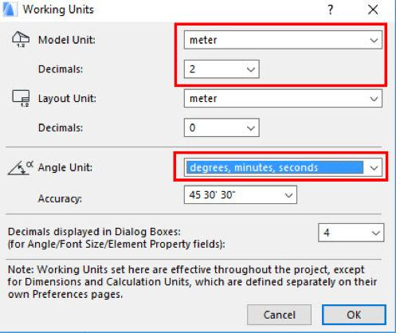
**
现在我们开始创建边界线。
我们复现的是常见的典型工作流程 —— 即假设我们收到了一份地契（Certificate of Title）作为场地信息。
- 转到 Cadimage > Sites > Site Boundary Editor（场地边界编辑器）
**
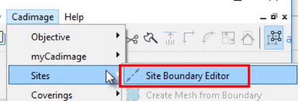
**
- 我们的起点是项目左下角的 Project Origin（项目原点）。点击 此处。
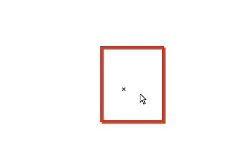
- 现在系统会要求你输入边界线的方位角和长度。在我们的示例中，第一条边界长 27.93m，方位角为 1° 28' 49"
- 在 Length（长度）字段中输入长度，即 27.93（我们以米为单位工作）
- 在 Bearing（方位角）字段中输入方位角，即 1 <空格> 28 <空格> 49 请在度、分、秒之间加空格，例如：
- 沿场地顺时针方向依次输入相关信息 （长度与方位角）
- 第二条边界长 26.45m，方位角为 83° 1' 6"
- 第三条边界长 35.57m，方位角为 4° 8' 3"
注意： 对于某些边界，边界方向可能并非你所需要的方向。该边界相对预期方向旋转了 180 度；点击 Flip（翻转）可将边界翻转 180°。
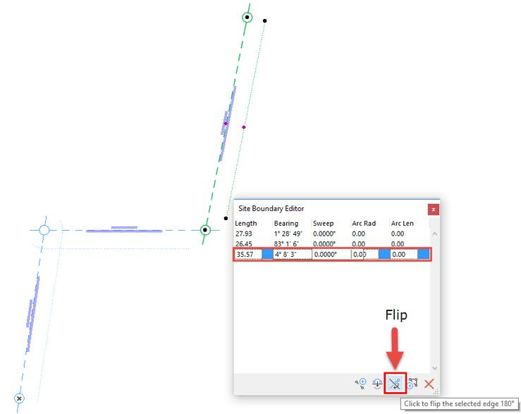
- 第四条边界长 24.78m，方位角为 100° 5' 4" 这一条也可能需要翻转。
- 我们很少遇到方位角和长度恰好构成完美闭合形状的情况。Sites 工具允许你点击 Close Boundary（闭合边界）按钮，但前提是首尾两点之间的间隙大于 50mm，此处并非如此。
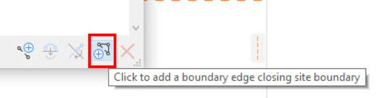
完成。
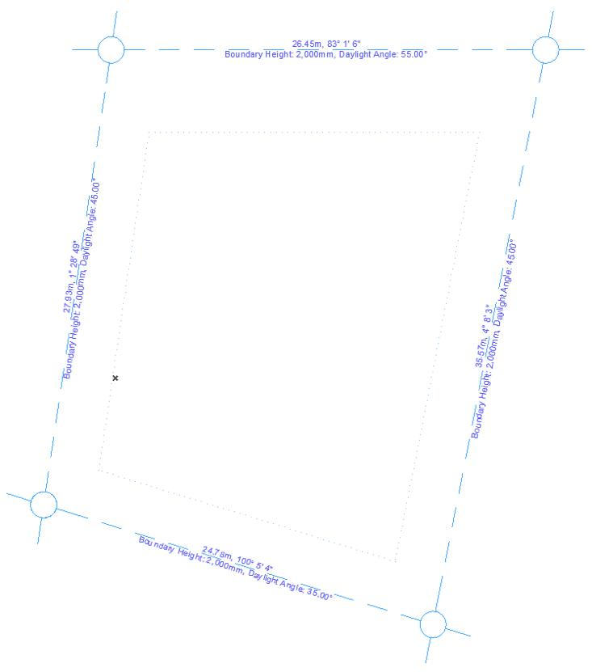
Next, we will create the Boundary lines of our site. To input Boundary Lines we need to be able to input angles as degrees minutes and seconds instead of Degrees.
- Go to Options > Project Preferences > Working Units… These are the units of input as opposed to Dimensions which is the display of units.
- Set the Model Units to meter and 2 decimal places
Set the Angle Unit: to degrees, minutes, seconds and click OK
**
**
Now we will start creating our boundary lines.
We are replicating the typical workflow of if we had received a Certificate of Title as our Site Information.
- Go to Cadimage > Sites > Site Boundary Editor
**
**
- Our start point is Project Origin down the bottom left of our project. Click here.
- Now you will be asked for the Bearing and Length of the Boundary Lines. In our exmaple, the first Boundary is 27.93m with a bearing of 1° 28' 49"
- Length field and type the length ie 27.93 (we are working in Meters)
- Bearing field and the bearing ie 1
28 49 Add a space between the Degrees and Minutes and Seconds i.e.
- Working in a Clockwise direction around the site enter in the relevant information (Length & Bearing)
- The second Boundary is 26.45m with a bearing of 83° 1' 6"
- The third Boundary is 35.57m with a bearing of 4° 8' 3"
NOTE:With some boundaries, the direction of the boundary may not go in the direction you require. This boundary has placed 180 degrees from our intended direction; click Flip to flip the Boundary 180°
- The fourth Boundary is 24.78m with a bearing of 100° 5' 4" This may need to be Flipped also
- We rarely find that the bearings and lengths form a perfect closed shape so even. The Sites tool allows you to click a Close Boundary button if the gap between the first point and the last point is longer than 50mm, which is not the case here.
Finished.
英文原文对照Official English Original
Next, we will create the Boundary lines of our site. To input Boundary Lines we need to be able to input angles as degrees minutes and seconds instead of Degrees.
- Go to Options > Project Preferences > Working Units… These are the units of input as opposed to Dimensions which is the display of units.
- Set the Model Units to meter and 2 decimal places
Set the Angle Unit: to degrees, minutes, seconds and click OK
**
**
Now we will start creating our boundary lines.
We are replicating the typical workflow of if we had received a Certificate of Title as our Site Information.
- Go to Cadimage > Sites > Site Boundary Editor
**
**
- Our start point is Project Origin down the bottom left of our project. Click here.
- Now you will be asked for the Bearing and Length of the Boundary Lines. In our exmaple, the first Boundary is 27.93m with a bearing of 1° 28' 49"
- Length field and type the length ie 27.93 (we are working in Meters)
- Bearing field and the bearing ie 1
28 49 Add a space between the Degrees and Minutes and Seconds i.e.
- Working in a Clockwise direction around the site enter in the relevant information (Length & Bearing)
- The second Boundary is 26.45m with a bearing of 83° 1' 6"
- The third Boundary is 35.57m with a bearing of 4° 8' 3"
NOTE:With some boundaries, the direction of the boundary may not go in the direction you require. This boundary has placed 180 degrees from our intended direction; click Flip to flip the Boundary 180°
- The fourth Boundary is 24.78m with a bearing of 100° 5' 4" This may need to be Flipped also
- We rarely find that the bearings and lengths form a perfect closed shape so even. The Sites tool allows you to click a Close Boundary button if the gap between the first point and the last point is longer than 50mm, which is not the case here.
Finished.
CI Sites 工具 - 创建曲线边界
CI Sites Tool - Creating a Curved Boundary
分布并对齐植物标签
Distributing and Aligning Plant Labels
在放置标签之后（参见此处文章），可以用更有条理的方式分布标签。在下图中，标签已放置在植物上：
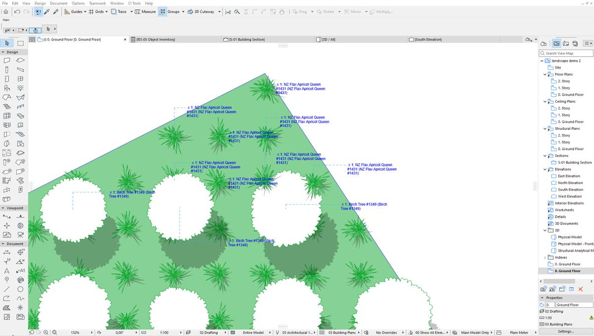
不过，为了让标签更整洁并彼此对齐，请选择要分布的标签，然后点击 Ci Tools 菜单 - Sites（场地） - Distribute Selected Plant Labels（分布所选植物标签）：
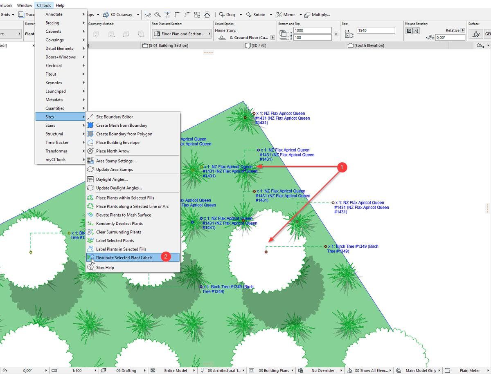
系统会提示你选择对齐位置 —— 点击一次开始对齐线，再次点击结束对齐线：
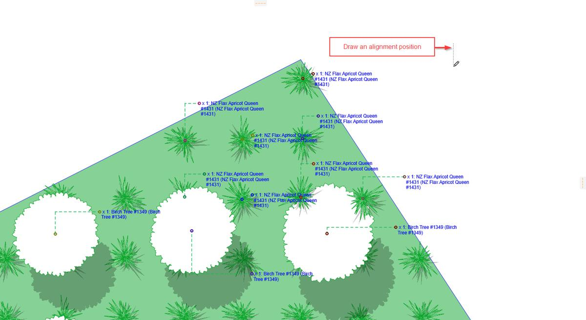
现在标签将被分布并对齐：
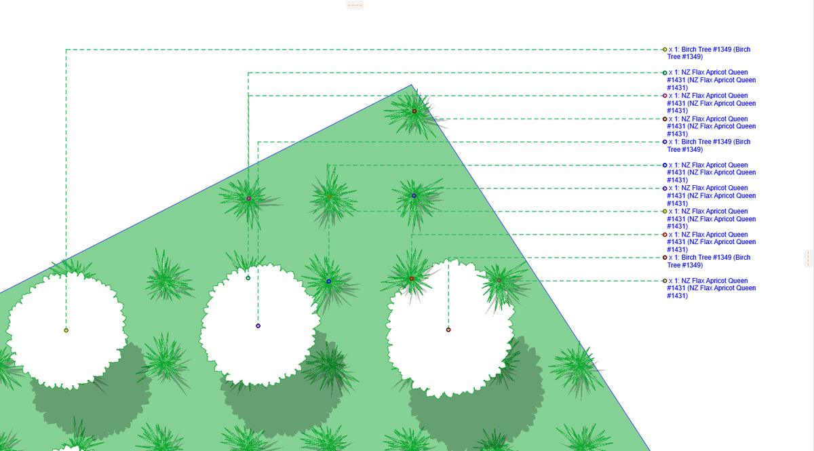
如果你想重新分布或重新对齐标签，可以按需重复执行同一流程，直到获得想要的效果。
Once Labels have been placed (see article here), it is possible to Distribute Labels in a more orderly way. In the image below, labels have been placed on Plants:
To tidy up the labels a bit though, and align them with each other, Select the labels you want to distribute, and then click on the Ci Tools menu - Sites - Distribute Selected Plant Labels:
You will be prompted to choose the Alignment Position - click once to start the alignment line, and a second time to finish it:
And now, the labels will be distributed and aligned:
If you ever want to redistribute or re-align the labels, you can run the same process again, as many times as you need, to get the result you want
英文原文对照Official English Original
Once Labels have been placed (see article here), it is possible to Distribute Labels in a more orderly way. In the image below, labels have been placed on Plants:
To tidy up the labels a bit though, and align them with each other, Select the labels you want to distribute, and then click on the Ci Tools menu - Sites - Distribute Selected Plant Labels:
You will be prompted to choose the Alignment Position - click once to start the alignment line, and a second time to finish it:
And now, the labels will be distributed and aligned:
If you ever want to redistribute or re-align the labels, you can run the same process again, as many times as you need, to get the result you want
如何选择你的 Cadimage 边界对象
How to selecting your Cadimage Boundary Objects
新西兰模板中提供了一个条件集（Criteria Set），便于一次性选中所有场地边界对象。
转到 Edit > Find and Select（编辑 > 查找并选择）
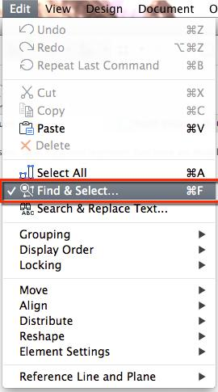
然后选择 Cadimage Boundary +North 选项，再点击“+”。
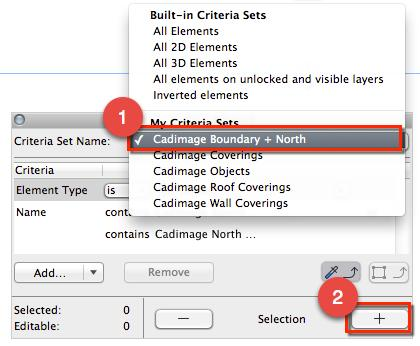
这将选中该楼层中可见的所有边界以及指北针。
The New Zealand template has a Criteria Set that makes it easy to select all your Site Boundary objects at once.
Go to Edit>Find and Select
and select the option Cadimage Boundary +North and then '+'.
This will select all Boundaries plus the North arrow visible in that Story.
英文原文对照Official English Original
The New Zealand template has a Criteria Set that makes it easy to select all your Site Boundary objects at once.
Go to Edit>Find and Select
and select the option Cadimage Boundary +North and then '+'.
This will select all Boundaries plus the North arrow visible in that Story.
为植物添加标签
Labelling Plants
Sites 工具能够为植物添加标签 —— 既可以为一组所选植物添加标签，也可以为包含植物的填充区域添加标签。添加标签之后，你还可以按需更改标签的显示方式。
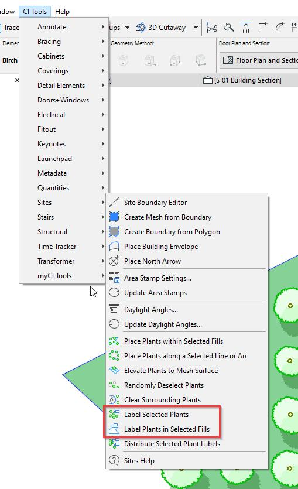
为一组所选植物添加标签
要为所选植物添加标签，首先选择想要包含的植物。
注意：你的选择可以包含同一种植物，也可以包含多种不同植物 —— 标签会根据所选内容相应地应用。
接下来，点击 Ci Tools 菜单 - Sites - Label Selected Plants（为所选植物添加标签）：
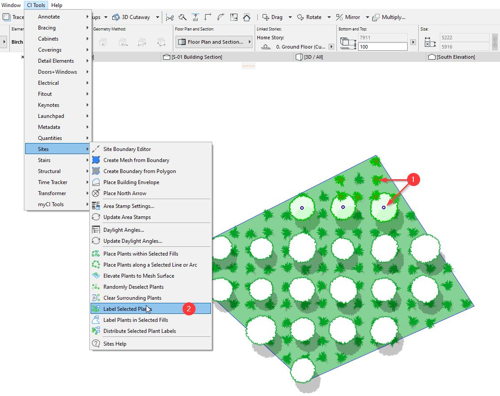
对话框会打开，询问你希望使用 Group Contiguous（分组连续）还是 Group All（全部分组）
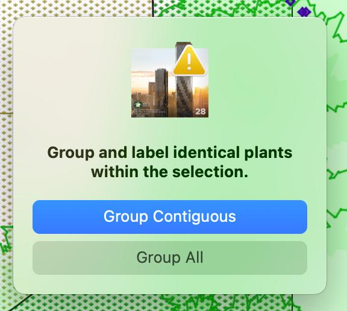
Group Contiguous 选项会为每一“簇”植物创建一个独立标签 —— 即彼此靠近的植物组：
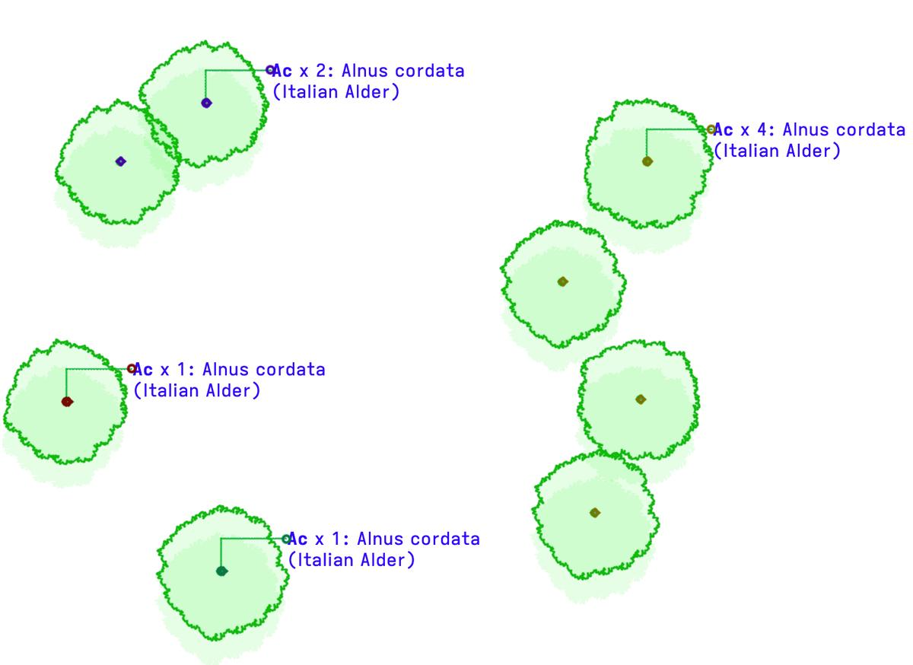
而 Group All 选项则把所有已选的同类植物视为一个完整的组：
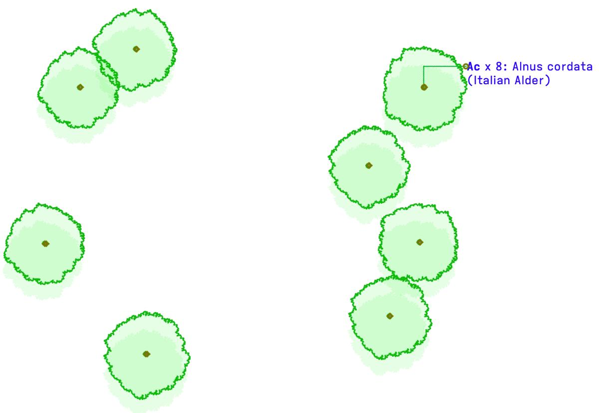
为填充区域中的植物添加标签
首先，选择要添加标签的填充区域（Fill），然后点击 Ci Tools 菜单 - Sites - Label Plants in Selected Fills（为所选填充区域中的植物添加标签）：
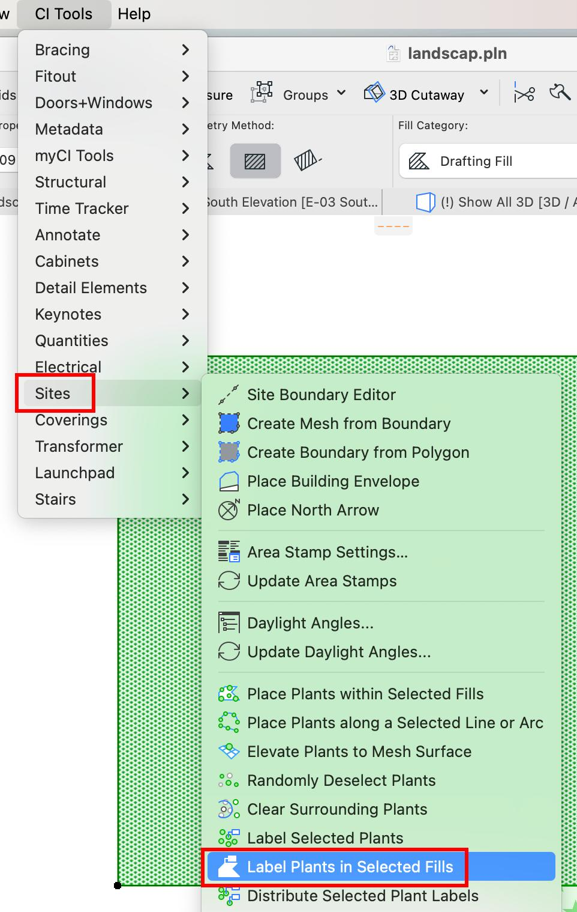
这会为每个填充区域附加一个标签，列出其中包含的植物：
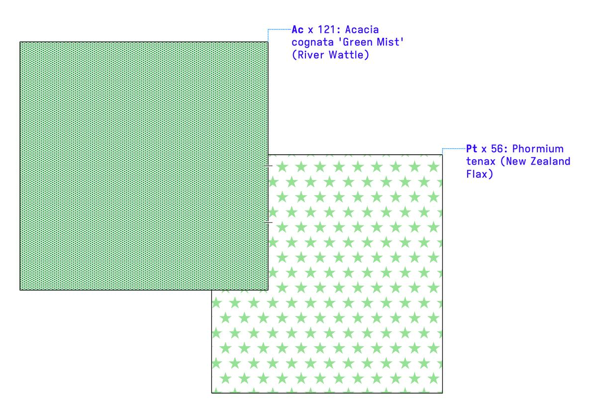
控制标签的显示
标签放置之后，可以修改标签设置以适应你的需要。你可以在此设置画笔颜色和线型、边框尺寸，以及是否要在已标注的构件周围显示气泡（Bubbles）：
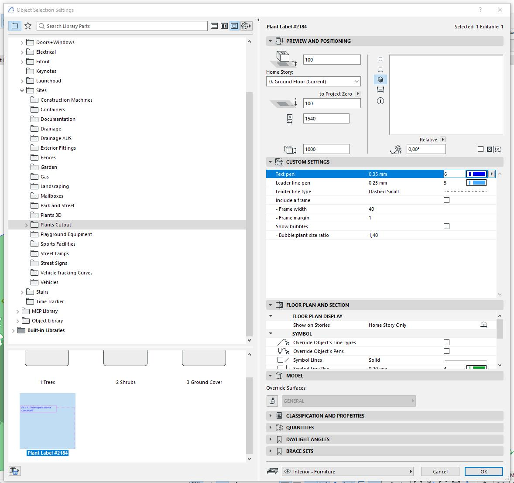
字体样式和尺寸的设置以及标签内容，可在 Sites 的模型视图选项中 Labels（标签）下找到：
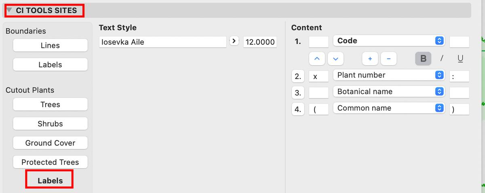
与 Ci Tools Sites 镂空植物配合使用时，标签默认依次显示编号（Code）、数量、植物学名称和通用名称。
The Sites tool has the ability to Label plants - either by labelling a Selection of Plants, or by labelling a Fill which contains plants. Once labelled, you can also change the display of the labels to your preference.
Labelling a Selection of Plants
To label a Selection of plants, start by Selecting the plants you want to include.
Note: your selection can contain either all the same types of plant, or multiple different plants - the Labels will be applied appropriately based on what is selected
Next, click on the Ci Tools menu - Sites - Label Selected Plants:
A dialog will open asking if you want to Group Contiguous, or Group All
The Group Contiguous option will create a separate label for each "clumped" group of plants - i.e. groups of plants that are close to each other:
And the Group All option will treat all matching Plants selected as a complete group:
Labelling Plants in a Fill
To start, select the Fill(s) that you want to Label, and then click on the Ci Tools menu - Sites - Label Plants in Selected Fills:
This will attach a Label to each Fill, listing the Plants they contain:
Controlling the Display of Labels
Once your Labels are placed, the Label Settings can be modified to suit you. You can set the Pen colour and Linetype here, as well as the size of the Frame, and whether you want Bubbles to display around the labelled elements:
And the settings for the Font style and size, and the contents of the label can be found in the Model View Options for Sites, under Labels:
When used with Ci Tools Sites Cutout plants, the label will default to display the Code, quantity, Botanical name, and Common name, in that order
英文原文对照Official English Original
The Sites tool has the ability to Label plants - either by labelling a Selection of Plants, or by labelling a Fill which contains plants. Once labelled, you can also change the display of the labels to your preference.
Labelling a Selection of Plants
To label a Selection of plants, start by Selecting the plants you want to include.
Note: your selection can contain either all the same types of plant, or multiple different plants - the Labels will be applied appropriately based on what is selected
Next, click on the Ci Tools menu - Sites - Label Selected Plants:
A dialog will open asking if you want to Group Contiguous, or Group All
The Group Contiguous option will create a separate label for each "clumped" group of plants - i.e. groups of plants that are close to each other:
And the Group All option will treat all matching Plants selected as a complete group:
Labelling Plants in a Fill
To start, select the Fill(s) that you want to Label, and then click on the Ci Tools menu - Sites - Label Plants in Selected Fills:
This will attach a Label to each Fill, listing the Plants they contain:
Controlling the Display of Labels
Once your Labels are placed, the Label Settings can be modified to suit you. You can set the Pen colour and Linetype here, as well as the size of the Frame, and whether you want Bubbles to display around the labelled elements:
And the settings for the Font style and size, and the contents of the label can be found in the Model View Options for Sites, under Labels:
When used with Ci Tools Sites Cutout plants, the label will default to display the Code, quantity, Botanical name, and Common name, in that order
放置面积图章
Placing an Area Stamp
首先，设置面积图章的 Settings（设置）以匹配你希望测量的区域（Zones）：
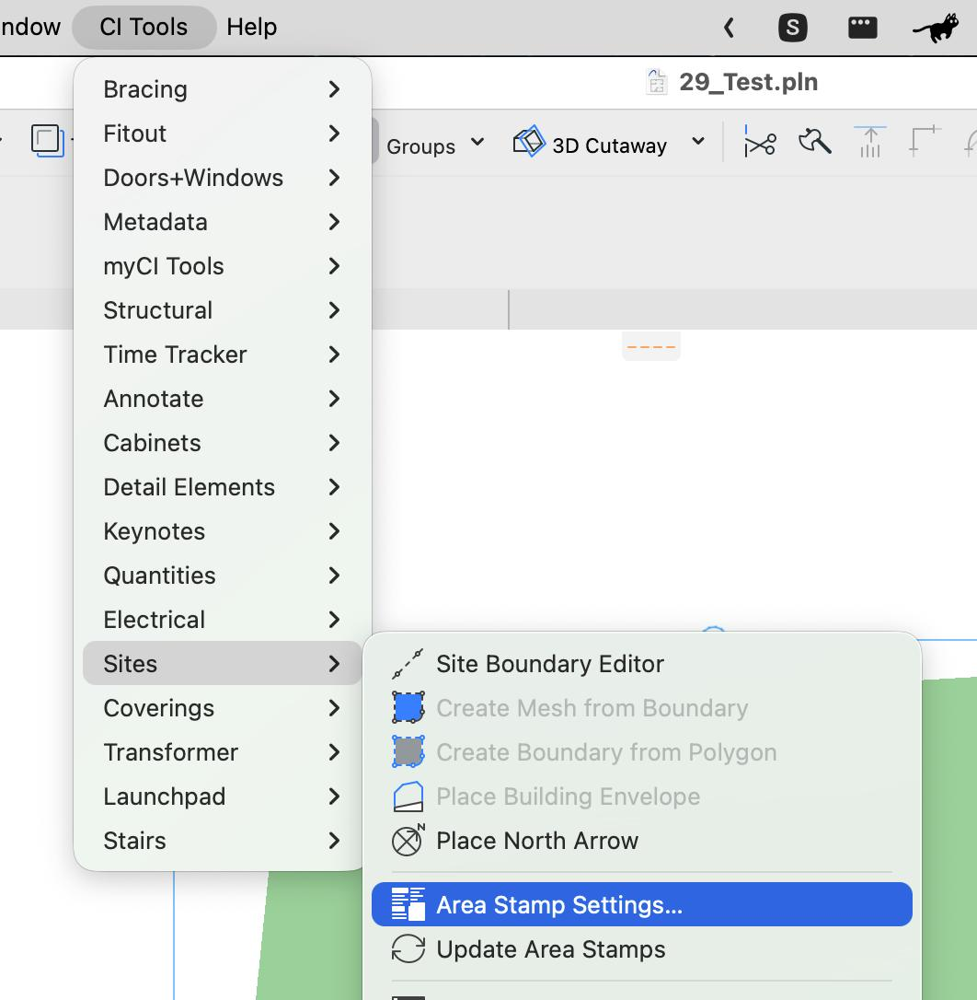
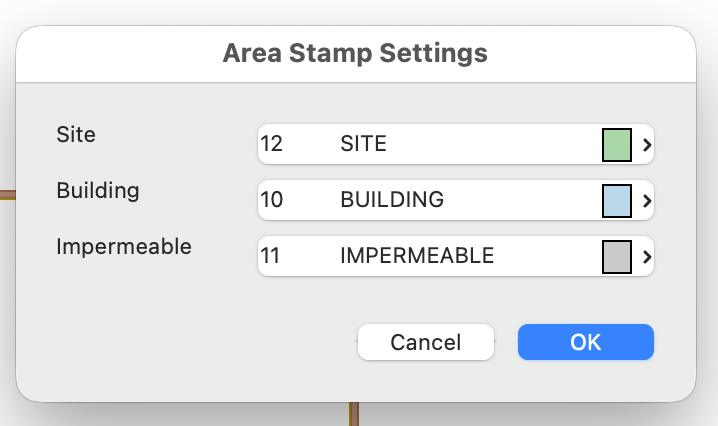
在使用这些类别放置好区域（Zones）之后，运行命令 Ci Tools - Sites - Update Area Stamps（更新面积图章），然后点击放置。
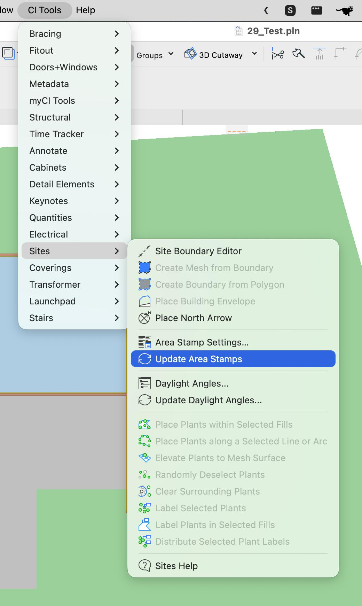
如果图章显示的内容与预期不符，请确保设置中你的区域所对应的改造状态正确 —— 即 Existing（既有）或 Proposed（拟建）。
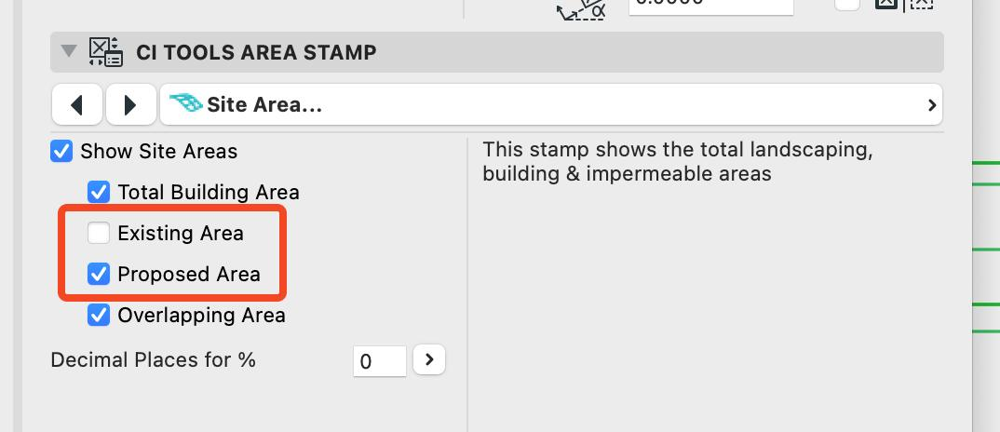
First, setup the Area Stamp Settings to match the Zones you want to measure:
Once you have Zones placed using those Categories, run the command Ci Tools - Sites - Update Area Stamps, and click to place
If the stamp does not show what you expect, ensure that the settings are set to show the correct renovation status on your Zones - either Existing or Proposed
英文原文对照Official English Original
First, setup the Area Stamp Settings to match the Zones you want to measure:
Once you have Zones placed using those Categories, run the command Ci Tools - Sites - Update Area Stamps, and click to place
If the stamp does not show what you expect, ensure that the settings are set to show the correct renovation status on your Zones - either Existing or Proposed
在填充区域上放置植物
Plant Placement onto a Fill
Sites 工具能够快速便捷地沿一条线放置植物或填充一个区域 —— 本页介绍在填充区域（Fill）上放置 —— 参见此处了解沿线放置
Ci Sites 植物对象或任何其他对象都可以放置以填充一个区域 —— 首先，绘制你希望用植物覆盖的填充区域。
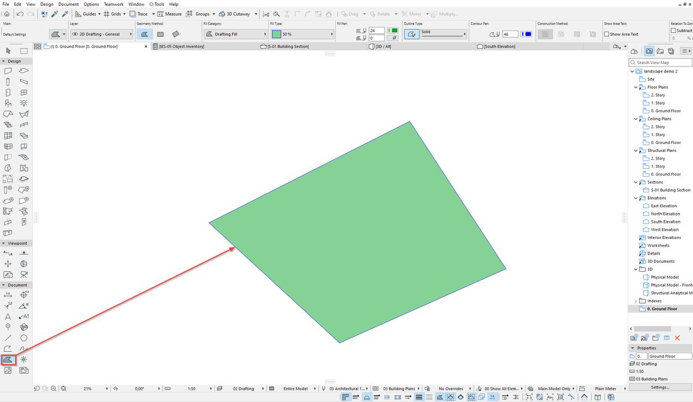
然后选择该填充区域（一个或多个），点击 Ci Tools 菜单，再点击 Sites，然后点击 Place Plants within Selected Fills（在所选填充区域内放置植物），如下图所示。
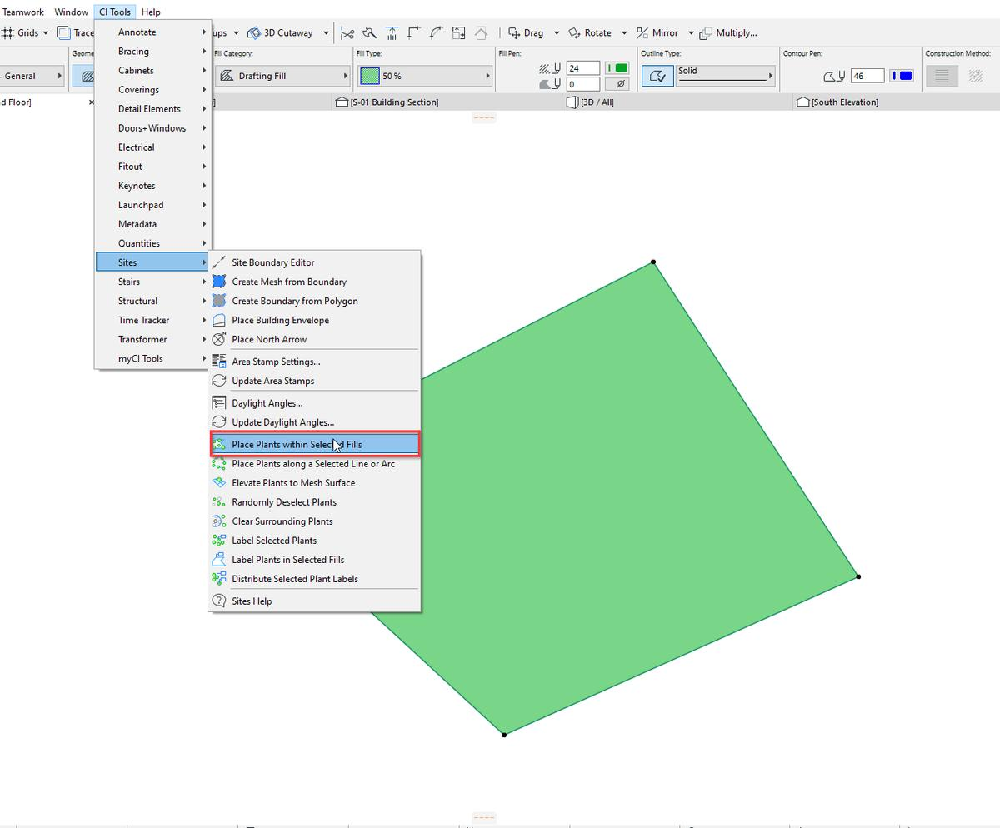
随后会打开对象选择器，你可以在其中选择要放置在线上的植物（或对象）。Ci Tools Sites 植物位于 Ci Tools Library 文件夹下，接着是 Sites，再接着是 Plants Cutout。

选择你想要的植物或对象，按需更改设置，然后点击 OK。完成后，会弹出一个对话框，用于指定你希望如何进行放置：
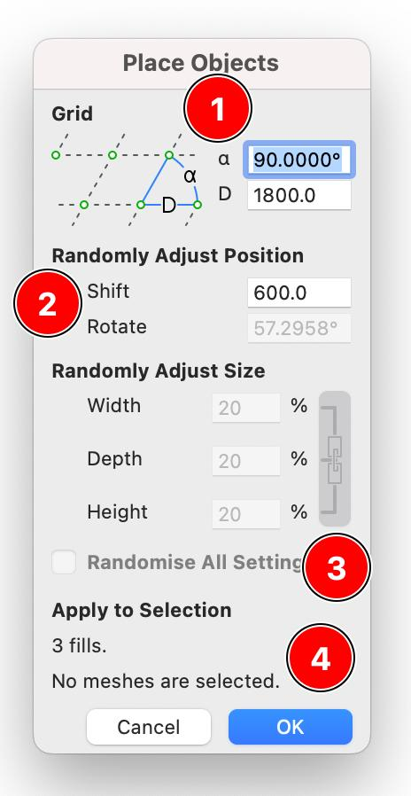
- Grid（网格）部分允许你定义植物在填充区域内部如何交错排布。alpha 值设定网格排布所成的角度，D 值设定网格点之间的间距 —— 即构成放置网格的“行”和“列”的尺寸
- 下一项设置允许你 Randomly Adjust the Position（随机调整位置），即在上述网格上随机调整填充区域中植物的放置位置。若 Shift 设为 0，植物将直接放置在网格线交点上；否则，按你在此设置的数值，每株植物都会以距网格线的随机距离放置（该随机距离小于此数值）。你也可以在此设置随机旋转，不过在使用 Ci Tools 植物时该设置不可用。但如果用于其他对象（即设为 0 以外的任何值），它将在默认旋转角度的 X 度范围内随机旋转对象（X 即你在此设置的值）
- 接下来几项设置允许你 Randomly Adjust the Size（随机调整尺寸），但与旋转类似，这项设置不适用于 Sites 植物，因为这些设置是在对象自身中定义的（详见此处）。要使用它，只需设置你希望随机化应用于对象宽度、深度和高度的百分比变化。设为 0 表示不作随机化。Randomise All Settings（随机化所有设置）选项可在受支持的对象上将尺寸、树龄、枝条分布等相关设置全部随机化。注意，此项仅适用于 Ci Tools Library - Sites - Plants 3D 中的少数几种三维树木，具体为 Ghost Gum 和 Lombardy Poplar。
- 最后，对话框会显示当前选中了多少个填充区域和网格 —— 即让你知道该操作将作用于哪些对象。
按你希望的方式完成这些设置后，点击 OK，工具就会为你放置植物。
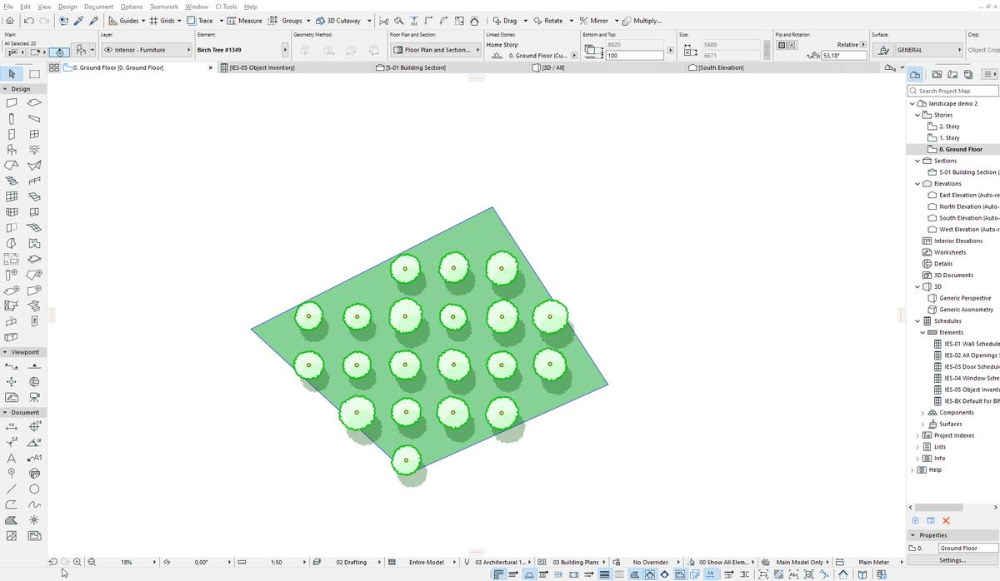
将已放置的植物升至网格表面
作为沿线放置植物流程的一部分，你还可以让工具把已放置的构件升至（或降至）网格表面。
为此，只需在开始操作前同时选中希望升到的网格和那些线：
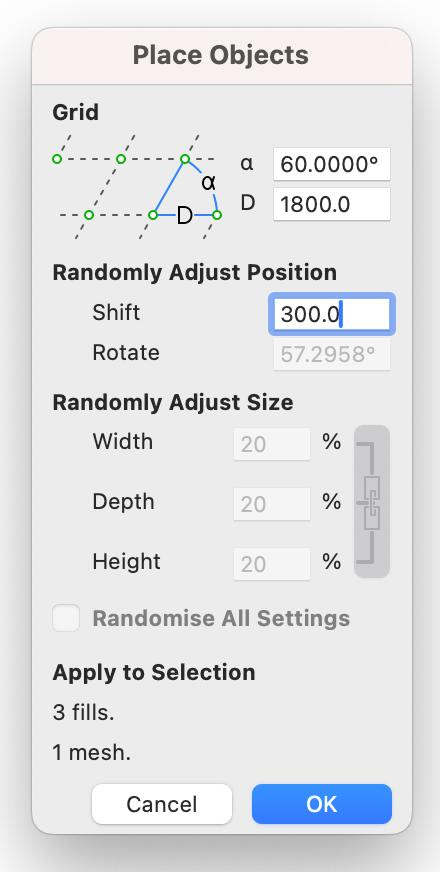
结果类似这样：
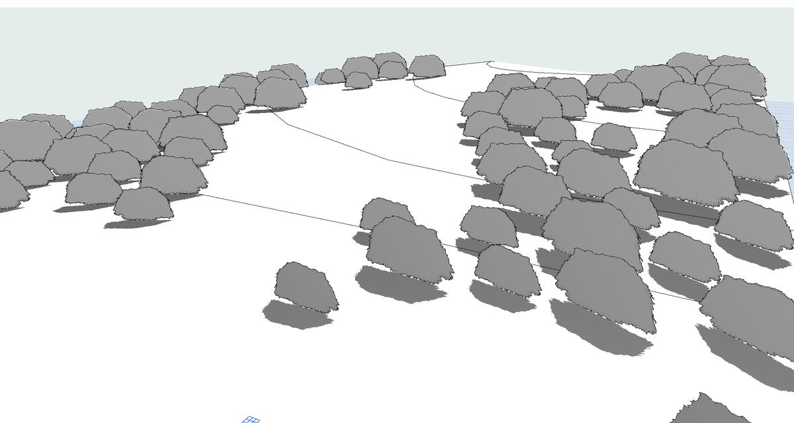
The Sites tool includes the ability to quickly and easily place plants along a line or to fill an area - this pages covers placing onto a Fill - see here to place along a Line
Ci Sites Plant objects, or any other object, can be placed to fill in an area - to get started, draw the fill (or fills) that you want to cover with plants
Then select the fill (or fills), and click on the Ci Tools menu, then Sites, and then Place Plants within Selected Fills as shown below
The object picker will then open, where you can choose the Plant (or object) that you want to place on the line. The Ci Tools Sites plants are located in the Ci Tools Library folder, then Sites, and Plants Cutout
Choose the Plant or object you want, and change any settings as required, and then hit OK. Once you do, a dialog to specify how you want the placement to be done will open:
- The Grid section allows you to define how the placement will be staggered inside the fill. the alpha value sets the angle that the grid will run across, and the D value sets the spacing between grid points - i.e. the size of the "rows and columns" that will make up the placement grid
- The next setting allows you to Randomly Adjust the Position that Plants will be placed in the fill, on the grid specified above. If the Shift is set to 0, plants will be placed directly on the gridline intersections, otherwise whatever value you set here, each plant will be placed at a random distance below this number away from the lines You can also set a random Rotation here as well, although this setting will not be available when using Ci Tools plants. If you do use it for other objects though (i.e. set it to anything besides 0), it will randomly rotate the objects within X degrees of the default rotation angle (where X is the value you set here)
- The next settings allow you to Randomly Adjust the Size of placed objects, although similar to the rotation, this is not available for Sites Plants, as those settings are defined in the objects themselves (see details here). To use this, just set the percentage change you would like the randomisation to apply to the Width Depth and Height of the objects. Setting these to 0 will use no randomisation. The Randomise All Settings option allows you to - on supported objects - randomise all settings to do with sizing, age, branch placement etc. Note this only works on a few of the 3D Trees which are in Ci Tools Library - Sites - Plants 3D. Specifically, the Ghost Gum and Lombardy Poplar
- Finally, the dialog shows how many fills and meshes are currently selected - i.e. to let you know what it is going to run the operation on.
Once you have set things here the way that you want, hit OK, and the tool will do the placement of your plants.
Elevating the Placed Plants to a Mesh Surface
As part of the process of placing the plants on a line, you can also have the tool elevate (or drop) the placed elements onto the surface of a Mesh.
To do so, just select the Mesh that you want them to elevate to along with the lines before you begin the operation:
Results in something like this:
英文原文对照Official English Original
The Sites tool includes the ability to quickly and easily place plants along a line or to fill an area - this pages covers placing onto a Fill - see here to place along a Line
Ci Sites Plant objects, or any other object, can be placed to fill in an area - to get started, draw the fill (or fills) that you want to cover with plants
Then select the fill (or fills), and click on the Ci Tools menu, then Sites, and then Place Plants within Selected Fills as shown below
The object picker will then open, where you can choose the Plant (or object) that you want to place on the line. The Ci Tools Sites plants are located in the Ci Tools Library folder, then Sites, and Plants Cutout
Choose the Plant or object you want, and change any settings as required, and then hit OK. Once you do, a dialog to specify how you want the placement to be done will open:
- The Grid section allows you to define how the placement will be staggered inside the fill. the alpha value sets the angle that the grid will run across, and the D value sets the spacing between grid points - i.e. the size of the "rows and columns" that will make up the placement grid
- The next setting allows you to Randomly Adjust the Position that Plants will be placed in the fill, on the grid specified above. If the Shift is set to 0, plants will be placed directly on the gridline intersections, otherwise whatever value you set here, each plant will be placed at a random distance below this number away from the lines You can also set a random Rotation here as well, although this setting will not be available when using Ci Tools plants. If you do use it for other objects though (i.e. set it to anything besides 0), it will randomly rotate the objects within X degrees of the default rotation angle (where X is the value you set here)
- The next settings allow you to Randomly Adjust the Size of placed objects, although similar to the rotation, this is not available for Sites Plants, as those settings are defined in the objects themselves (see details here). To use this, just set the percentage change you would like the randomisation to apply to the Width Depth and Height of the objects. Setting these to 0 will use no randomisation. The Randomise All Settings option allows you to - on supported objects - randomise all settings to do with sizing, age, branch placement etc. Note this only works on a few of the 3D Trees which are in Ci Tools Library - Sites - Plants 3D. Specifically, the Ghost Gum and Lombardy Poplar
- Finally, the dialog shows how many fills and meshes are currently selected - i.e. to let you know what it is going to run the operation on.
Once you have set things here the way that you want, hit OK, and the tool will do the placement of your plants.
Elevating the Placed Plants to a Mesh Surface
As part of the process of placing the plants on a line, you can also have the tool elevate (or drop) the placed elements onto the surface of a Mesh.
To do so, just select the Mesh that you want them to elevate to along with the lines before you begin the operation:
Results in something like this:
沿线放置植物
Plant placement along Lines
Sites 工具能够快速便捷地沿一条线放置植物或填充一个区域 —— 本页介绍沿线放置 —— 参见此处了解在填充区域内放置
Ci Sites 植物对象或任何其他对象都可以沿样条曲线、直线或多段线放置。首先，绘制你希望放置植物（或其他对象）的线。
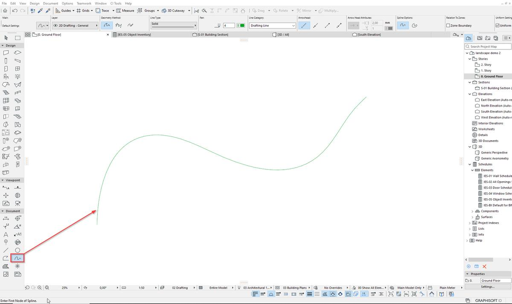
接下来，选中你已绘制的线，点击 Ci Tools 菜单，然后点击 Sites，再点击 Place Plants along a Selected Line or Arc（沿所选直线或圆弧放置植物），如下图所示。
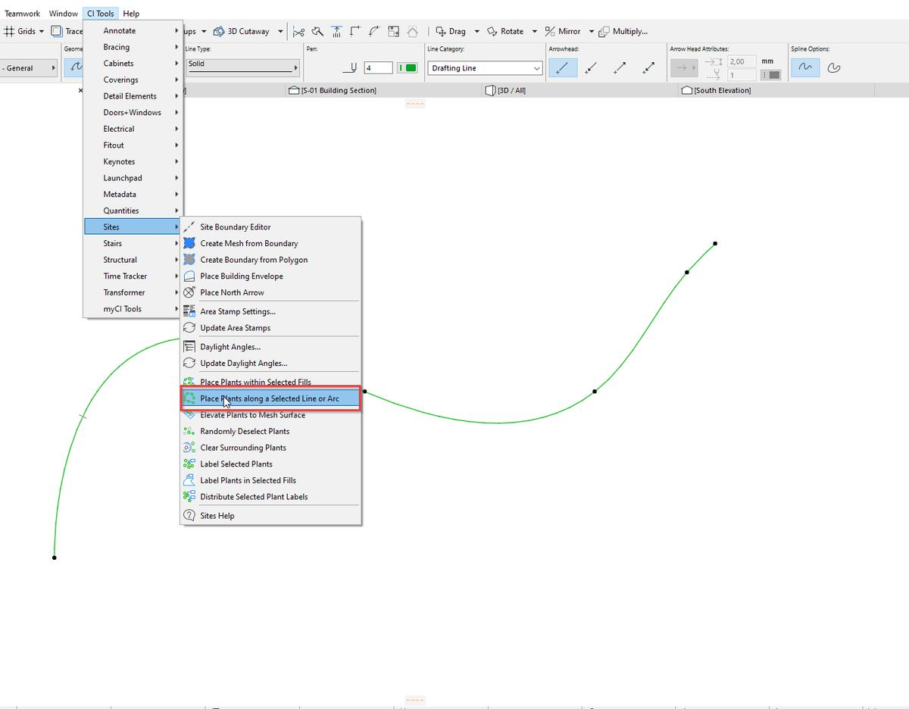
随后会打开对象选择器，你可以在其中选择要放置在线上的植物（或对象）。Ci Tools Sites 植物位于 Ci Tools Library 文件夹下，接着是 Sites，再接着是 Plants Cutout。
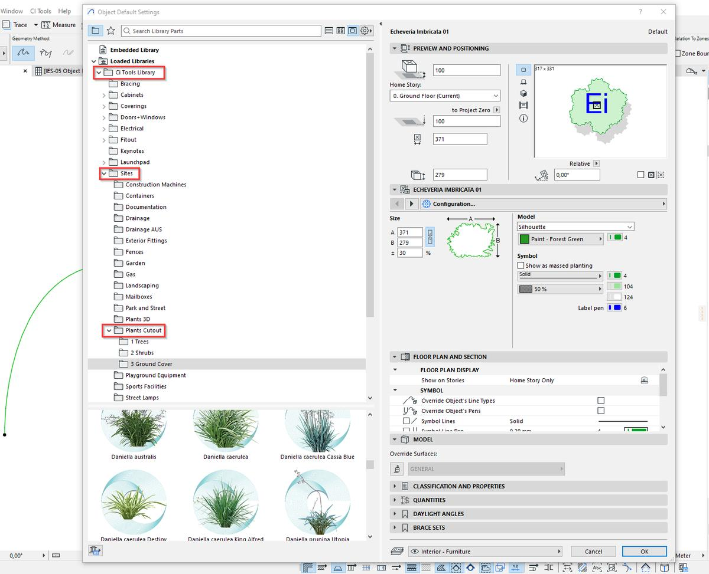
选择你想要的植物或对象，按需更改设置，然后点击 OK。完成后，会弹出一个对话框，用于指定你希望如何进行放置：
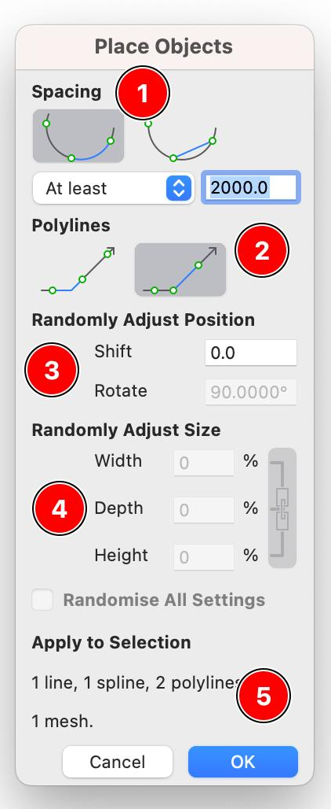
- Spacing Type（间距类型）设置用于定义植物间距是沿所选线测量，还是直接从一株植物到下一株植物测量。下面的 Value（数值）可用于设置间距距离，下拉列表则让你选择所给数值是最小间距（ At Least 至少）、最大间距（ No more than 不超过）还是精确值（ Exactly 恰好）。
- Polylines（多段线）设置让你选择间距是按所选线的整体长度计算，还是在每一段线段上独立设置（仅在多段线上放置时适用）
- 下一项设置允许你 Randomly Adjust the Position（随机调整位置），即植物在线上的放置位置。若设为 0，植物将直接放置在线上；否则，按你在此设置的数值，每株植物都会以距线的随机距离放置（该随机距离小于此数值）。你也可以在此设置随机旋转，不过在使用 Ci Tools 植物时该设置不可用。但如果用于其他对象（即设为 0 以外的任何值），它将在默认旋转角度的 X 度范围内随机旋转对象（X 即你在此设置的值）
- 接下来几项设置允许你 Randomly Adjust the Size（随机调整尺寸），但与旋转类似，这项设置不适用于 Sites 植物，因为这些设置是在对象自身中定义的（详见此处）。要使用它，只需设置你希望随机化应用于对象宽度、深度和高度的百分比变化。设为 0 表示不作随机化。Randomise All Settings（随机化所有设置）选项可在受支持的对象上将尺寸、树龄、枝条分布等相关设置全部随机化。注意，此项仅适用于 Ci Tools Library - Sites - Plants 3D 中的少数几种三维树木，具体为 Ghost Gum 和 Lombardy Poplar。
- 最后，对话框会显示当前选中了多少条线和网格 —— 即让你知道该操作将作用于哪些对象。
按你希望的方式完成这些设置后，点击 OK，工具就会为你放置植物。
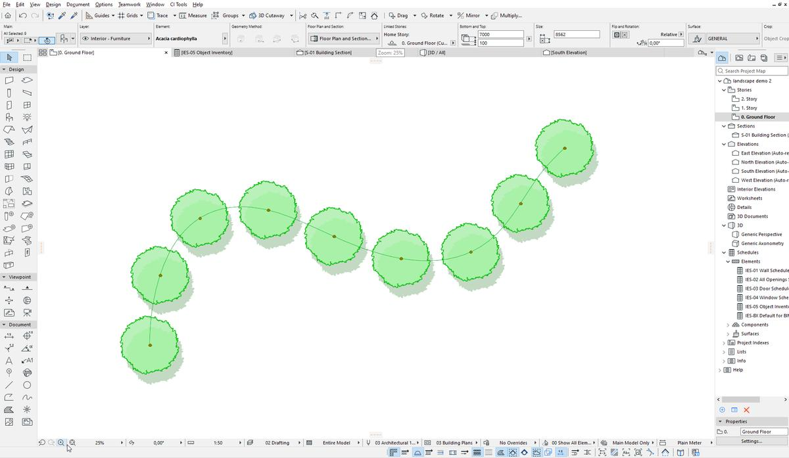
将已放置的植物升至网格表面
作为沿线放置植物流程的一部分，你还可以让工具把已放置的构件升至（或降至）网格表面。
为此，只需在开始操作前同时选中希望升到的网格和那些线：
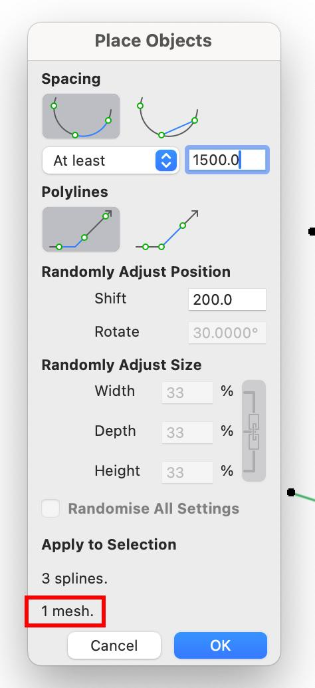
结果类似这样：
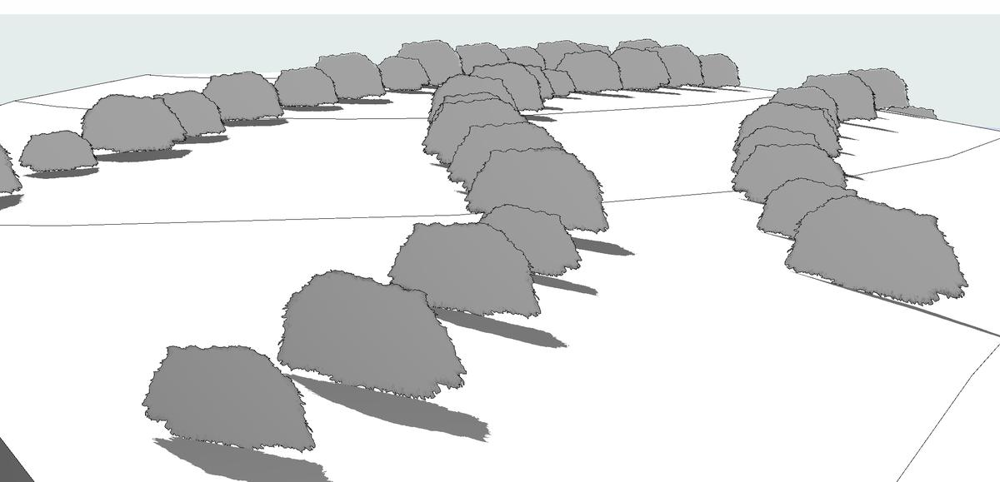
The Sites tool includes the ability to quickly and easily place plants along a line or to fill an area - this page covers placing along a line - see here to place in a Fill
Ci Sites Plant objects, or any other object, can be placed along a Spline, Line, or Polyline. To start, draw the line you would like to place your Plants (or other objects) on.
Next, select the line you have drawn, click on the Ci Tools menu, then Sites, and then Place Plants along a Selected Line or Arc as shown below
The object picker will then open, where you can choose the Plant (or object) that you want to place on the line. The Ci Tools Sites plants are located in the Ci Tools Library folder, then Sites, and Plants Cutout
Choose the Plant or object you want, and change any settings as required, and then hit OK. Once you do, a dialog to specify how you want the placement to be done will open:
- The Spacing Type setting defines whether you want the spacing between Plants to be measured along the selected line, or directly from Plant to Plant. Then the Value below allows you to set the spacing distance, and then the drop-down allows you to choose if the value you give is the minimum spacing ( At Least ), maximum spacing ( No more than ), or Exactly .
- The Polylines setting allows you to choose if the spacing should be calculated over the entire length of the selected line, or if it should be set independently on each line segment (only applies when placing on a Polyline)
- The next setting allows you to Randomly Adjust the Position that Plants will be placed on the line. If this is set to 0, plants will be placed directly on the line, otherwise whatever value you set here, each plant will be placed at a random distance below this number away from the line You can also set a random Rotation here as well, although this setting will not be available when using Ci Tools plants. If you do use it for other objects though (i.e. set it to anything besides 0), it will randomly rotate the objects within X degrees of the default rotation angle (where X is the value you set here)
- The next settings allow you to Randomly Adjust the Size of placed objects, although similar to the rotation, this is not available for Sites Plants, as those settings are defined in the objects themselves (see details here). To use this, just set the percentage change you would like the randomisation to apply to the Width Depth and Height of the objects. Setting these to 0 will use no randomisation. The Randomise All Settings option allows you to - on supported objects - randomise all settings to do with sizing, age, branch placement etc. Note this only works on a few of the 3D Trees which are in Ci Tools Library - Sites - Plants 3D. Specifically, the Ghost Gum and Lombardy Poplar
- Finally, the dialog shows how many lines and meshes are currently selected - i.e. to let you know what it is going to run the operation on.
Once you have set things here the way that you want, hit OK, and the tool will do the placement of your plants.
Elevating the Placed Plants to a Mesh Surface
As part of the process of placing the plants on a line, you can also have the tool elevate (or drop) the placed elements onto the surface of a Mesh.
To do so, just select the Mesh that you want them to elevate to along with the lines before you begin the operation:
Results in something like this:
英文原文对照Official English Original
The Sites tool includes the ability to quickly and easily place plants along a line or to fill an area - this page covers placing along a line - see here to place in a Fill
Ci Sites Plant objects, or any other object, can be placed along a Spline, Line, or Polyline. To start, draw the line you would like to place your Plants (or other objects) on.
Next, select the line you have drawn, click on the Ci Tools menu, then Sites, and then Place Plants along a Selected Line or Arc as shown below
The object picker will then open, where you can choose the Plant (or object) that you want to place on the line. The Ci Tools Sites plants are located in the Ci Tools Library folder, then Sites, and Plants Cutout
Choose the Plant or object you want, and change any settings as required, and then hit OK. Once you do, a dialog to specify how you want the placement to be done will open:
- The Spacing Type setting defines whether you want the spacing between Plants to be measured along the selected line, or directly from Plant to Plant. Then the Value below allows you to set the spacing distance, and then the drop-down allows you to choose if the value you give is the minimum spacing ( At Least ), maximum spacing ( No more than ), or Exactly .
- The Polylines setting allows you to choose if the spacing should be calculated over the entire length of the selected line, or if it should be set independently on each line segment (only applies when placing on a Polyline)
- The next setting allows you to Randomly Adjust the Position that Plants will be placed on the line. If this is set to 0, plants will be placed directly on the line, otherwise whatever value you set here, each plant will be placed at a random distance below this number away from the line You can also set a random Rotation here as well, although this setting will not be available when using Ci Tools plants. If you do use it for other objects though (i.e. set it to anything besides 0), it will randomly rotate the objects within X degrees of the default rotation angle (where X is the value you set here)
- The next settings allow you to Randomly Adjust the Size of placed objects, although similar to the rotation, this is not available for Sites Plants, as those settings are defined in the objects themselves (see details here). To use this, just set the percentage change you would like the randomisation to apply to the Width Depth and Height of the objects. Setting these to 0 will use no randomisation. The Randomise All Settings option allows you to - on supported objects - randomise all settings to do with sizing, age, branch placement etc. Note this only works on a few of the 3D Trees which are in Ci Tools Library - Sites - Plants 3D. Specifically, the Ghost Gum and Lombardy Poplar
- Finally, the dialog shows how many lines and meshes are currently selected - i.e. to let you know what it is going to run the operation on.
Once you have set things here the way that you want, hit OK, and the tool will do the placement of your plants.
Elevating the Placed Plants to a Mesh Surface
As part of the process of placing the plants on a line, you can also have the tool elevate (or drop) the placed elements onto the surface of a Mesh.
To do so, just select the Mesh that you want them to elevate to along with the lines before you begin the operation:
Results in something like this:
ProKit Sites – 从这里开始
ProKit Sites – Start here
Sites 工具可用于精细的景观设计，以及放置诸如建筑退线和三维建筑轮廓包络等场地相关需求。它还包含一个内容广泛的构件库，包括：
场地开挖机械与瓦砾清除
排水与给水分配对象
围挡与围栏
园林设施与硬质景观，包括公园、游乐场和公共空间设施
各种可定制的三维和二维镂空植物
典型运动场地布局
街道照明与标识标牌
各种车辆及其行驶轨迹曲线。
这些都可以通过普通的 ARCHICAD 对象工具访问。
Libpack 加载（自 ARCHICAD 29 起）
需要特别注意的是，ProKit Sites 工具要求手动将 Sites Libpack 加载到项目中。
与所有库一样，此操作通过库管理器完成。请注意，所加载的 Libpack 需在单个文件层级上选择，而非像早期 ARCHICAD 版本那样在文件夹层级上选择。
库管理器可通过 File > Library Manager 下拉菜单打开。

进入库管理器后，我们将使用“Add”按钮添加 Sites Libpack。

这允许你定位到 ARCHICAD 安装文件夹中的 ProKit Libpack 文件夹。
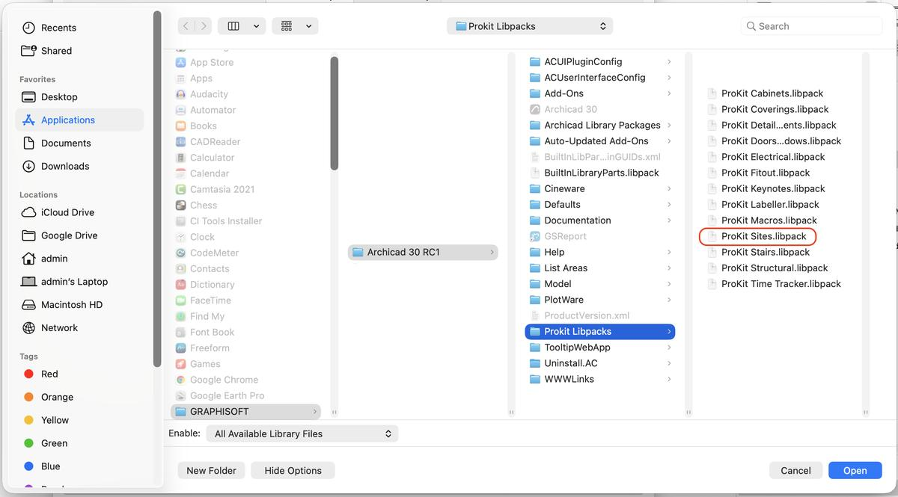
这将加载 Sites Libpack 及其关联的宏。
Sites 对象现在可在对象工具中使用。
放置 Sites 对象
Sites 对象使用 ARCHCAD 中的对象工具放置。
选定该工具后，即可打开设置并放置任意 Sites 对象。
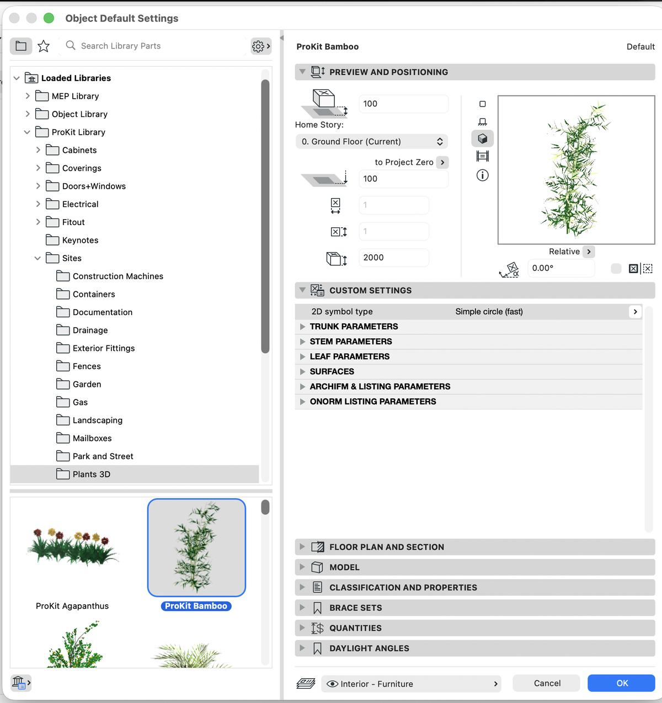
关于不同 Sites 对象和功能的详细信息，请参阅知识库中的其他文章。
The Sites Tool allows for intricate Landscape Design and placement of Site based require,ments such as building lines and 3D Building envelopes. It also contains an extensive library of Components consisting of:
Site Excavation Machinery and Rubble Removal
Drainage and Water reticulation objects
Hoarding and Fencing
Garden fixtures and Hard Landscaping, including Park, Playground and Public space fittings
Various customisable 3D and 2D Cutout Plants
Typical Sports ground layouts
Street Lighting and Signage
Various Vehicles and their tracking curves.
These are accessible through the normal ARCHICAD Object Tool.
Libpack loading (since ARCHICAD 29)
It is important to note that the ProKit Sites Tool requires the Sites Libpack to be manually loaded into the project.
As with all Libraries this is done through the Library Manager. Please note that the Libpacks that are loaded need to be selected at an individual file and not at a folder level as was the case in earlier ARCHICAD versions.
The Library Manager is accessed through the File>Library Manager dropdown.
Once in the Library Manager we will use the “Add” button to add the Sitess Libpack.
This allows navigation to the ProKit Libpack folder located in the ARCHICAD installation folder.
This will load the Sites Libpack and associated Macros.
The Sites Objects will now be available in the Object Tool.
Placing a Sites Object
The Sites objects are placed with the Object Tool in ARCHCAD.
Once the tool is selected, the settings can be opened and any Sites Object placed.
For more detailed information on the different Sites objects and features, please see the other articles on the Knowledge-base.
英文原文对照Official English Original
The Sites Tool allows for intricate Landscape Design and placement of Site based require,ments such as building lines and 3D Building envelopes. It also contains an extensive library of Components consisting of:
Site Excavation Machinery and Rubble Removal
Drainage and Water reticulation objects
Hoarding and Fencing
Garden fixtures and Hard Landscaping, including Park, Playground and Public space fittings
Various customisable 3D and 2D Cutout Plants
Typical Sports ground layouts
Street Lighting and Signage
Various Vehicles and their tracking curves.
These are accessible through the normal ARCHICAD Object Tool.
Libpack loading (since ARCHICAD 29)
It is important to note that the ProKit Sites Tool requires the Sites Libpack to be manually loaded into the project.
As with all Libraries this is done through the Library Manager. Please note that the Libpacks that are loaded need to be selected at an individual file and not at a folder level as was the case in earlier ARCHICAD versions.
The Library Manager is accessed through the File>Library Manager dropdown.
Once in the Library Manager we will use the “Add” button to add the Sitess Libpack.
This allows navigation to the ProKit Libpack folder located in the ARCHICAD installation folder.
This will load the Sites Libpack and associated Macros.
The Sites Objects will now be available in the Object Tool.
Placing a Sites Object
The Sites objects are placed with the Object Tool in ARCHCAD.
Once the tool is selected, the settings can be opened and any Sites Object placed.
For more detailed information on the different Sites objects and features, please see the other articles on the Knowledge-base.
将植物移动到网格表面
Shifting Plants on to the Surface of a Mesh
Sites 工具能够将任意对象的基座（向上或向下）移动到网格表面上。
因此，你可以使用 Sites 工具提供的任一种方法放置植物（无论是沿线放置还是在填充区域上放置），或仅仅手动放置它们，然后事后将它们移到网格表面上，而不必逐个手动调整。
要运行该功能，只需选择要移动的植物（或对象），然后转到 Ci Tools 菜单 - Sites - Elevate Plants to Mesh Surface（将植物升至网格表面）：
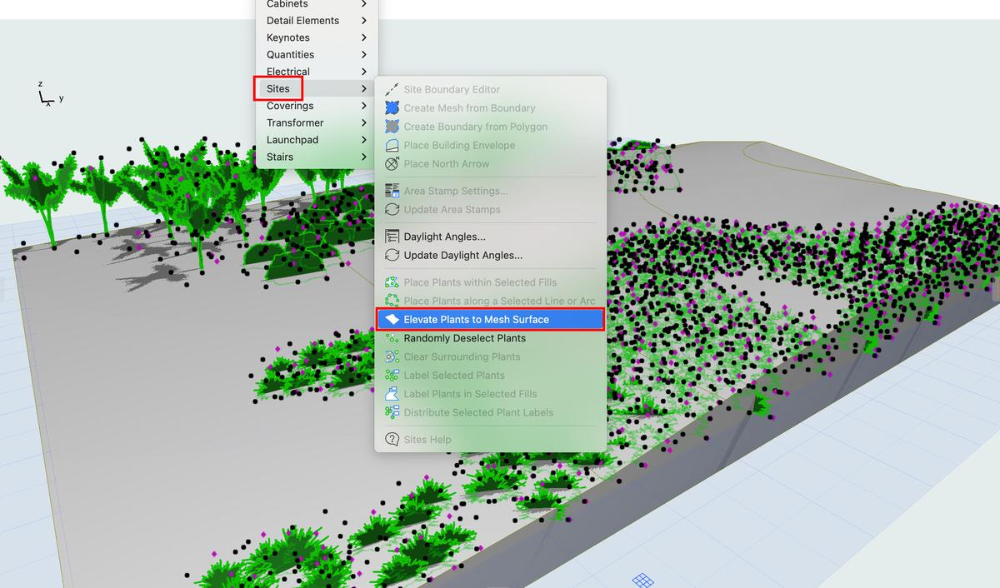
这会将所有所选对象移动，使其位于其上方或下方任何网格的表面上：
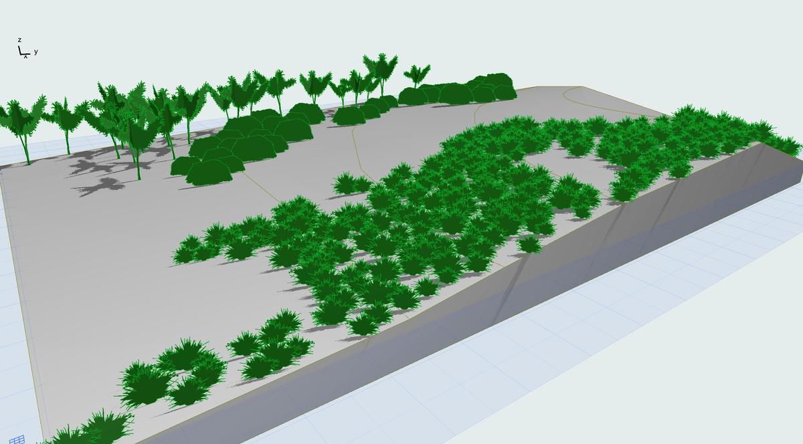
如果你的项目有多个网格，而你希望植物或对象移动到其中某一个特定网格的表面，只需在运行功能前同时选中该网格和所有对象，它将忽略其他所有网格。
例如，运行该功能并选中这个网格时：
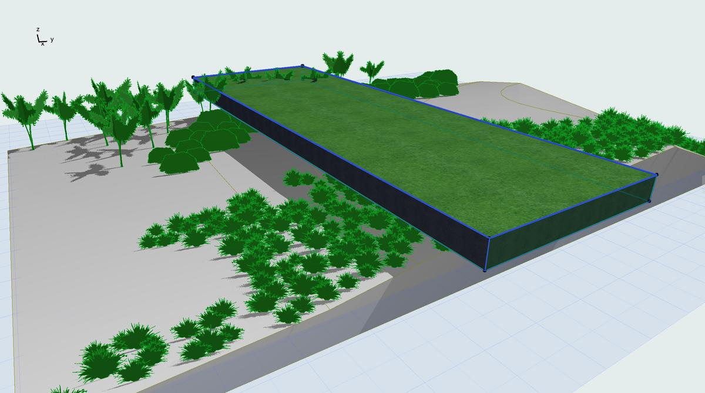
植物将上移至该网格的表面，而不是下方网格的表面，而所有不在所选网格上方或下方的其他植物则保持不变：
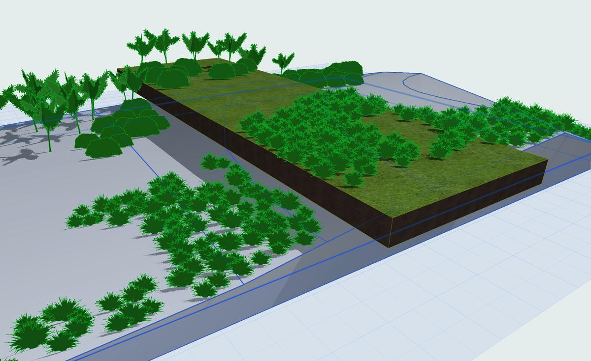
The Sites tool has the ability to shift (upward or downward) the base of any Objects to sit on the surface of a mesh
So you can place Plants using either one of the methods the Site tool provides (either along a Line or on a Fill), or just by manually placing them, and then move them later on to sit on the mesh surface instead of having to adjust them all manually
To run the function, jest select the Plants (or objects) that you want to shift, and go to the Ci Tools menu - Sites - Elevate Plants to Mesh Surface:
This will shift to all selected objects to sit on the surface of any mesh that is above or below them:
If your project has multiple Meshes, and you want the Plants or objects to shift to the surface of a specific one, simply select the mesh you want along with all the objects before you run the function, and it will ignore all other meshes
For example, when running the function and selecting this mesh:
the Plants will shift up to that mesh's surface, instead of the mesh below, while all the other plants that are not above or below the selected mesh will be unchanged:
英文原文对照Official English Original
The Sites tool has the ability to shift (upward or downward) the base of any Objects to sit on the surface of a mesh
So you can place Plants using either one of the methods the Site tool provides (either along a Line or on a Fill), or just by manually placing them, and then move them later on to sit on the mesh surface instead of having to adjust them all manually
To run the function, jest select the Plants (or objects) that you want to shift, and go to the Ci Tools menu - Sites - Elevate Plants to Mesh Surface:
This will shift to all selected objects to sit on the surface of any mesh that is above or below them:
If your project has multiple Meshes, and you want the Plants or objects to shift to the surface of a specific one, simply select the mesh you want along with all the objects before you run the function, and it will ignore all other meshes
For example, when running the function and selecting this mesh:
the Plants will shift up to that mesh's surface, instead of the mesh below, while all the other plants that are not above or below the selected mesh will be unchanged:
Sites - 模型视图选项
Sites - Model View Options
Sites 工具提供若干模型视图选项（Model View Options，MVO），你可以借此让场地构件在各个视图中呈现不同的外观，而不必每次想改变显示方式时都去修改其设置。
Sites 的 MVO 分为两大类：
边界（Boundaries）
这一部分涵盖场地边界（Site Boundary）构件的设置，分为 2 组：
- 线条（Lines）
- 标签（Labels）
镂空植物（Cutout Plants）
这一部分涵盖镂空植物构件，由 5 个部分组成：
- 乔木（Trees）
- 灌木（Shrubs）
- 地被（Ground Cover）
- 保护树木（Protected Trees）
- 标签（Labels）
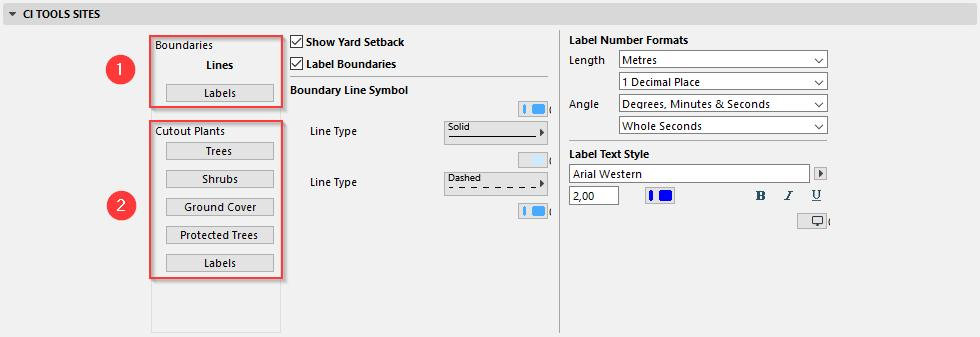
让我们逐一来看。
边界
线条
这些线条与使用 Sites 工具创建的场地边界相关。界面设置如下：
- 控制是否显示院界退让线（Yard Setback line）
- 设置边界是否带标签
- 这些设置控制边界线的画笔颜色和线型
- 控制退让线的画笔颜色及其线型
- 控制边界线末端圆圈的画笔颜色
- 这些设置与边界标签内容的设置相关（如果在 (2) 中开启）
- 最后，这些设置控制标签文本的格式
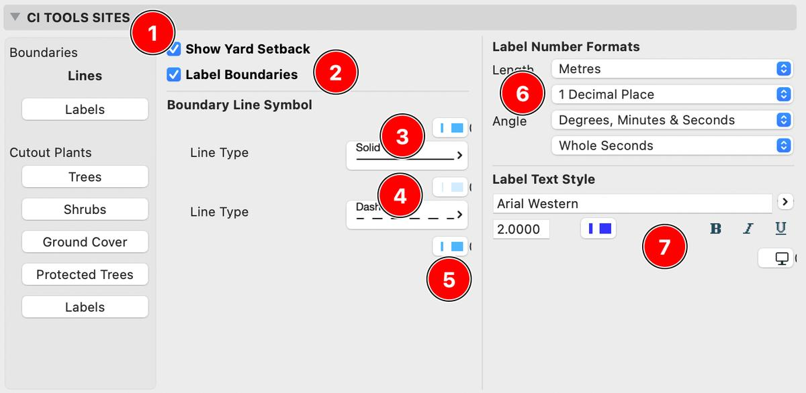
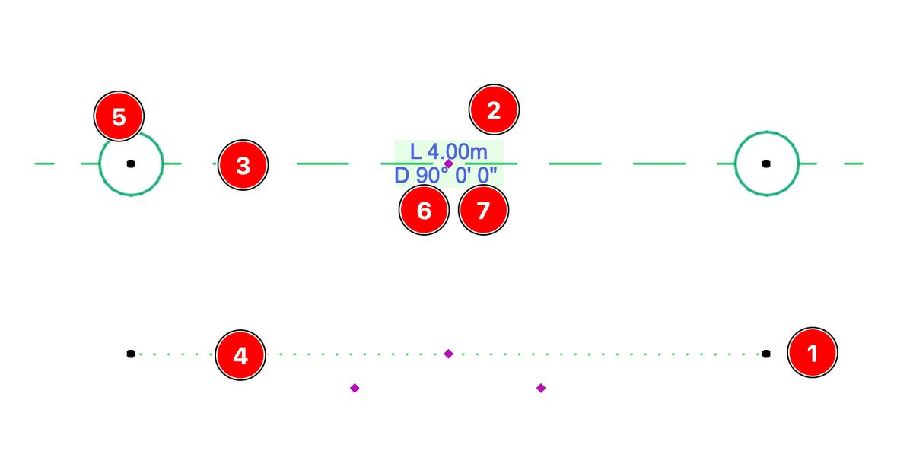
标签
- 这用于设置直线边界（Straight Boundaries）标签的内容。可用选项为：
Basic Label（基本标签）—— 仅显示长度、方向和轮廓数据
- Custom Data（自定义数据）—— 允许你自定义要显示的数据。将 Text Lines（文本行数）字段设为你想要的文本行数，Above boundary（边界之上）定义其中有多少行位于边界线之上（其余显示在下方）。然后从下方的下拉列表中选择你想编辑的行，以及该行中应包含多少个数据元素。接着在下方字段中为每个数据元素设置 Prefix（前缀）、Value（值）和 Suffix（后缀）
- 或 Listed Data（列表数据）—— 与自定义数据类似，但各元素以列表形式呈现，可拖动到你想要的任意位置，而不是以线为中心居中对齐
- 这用于设置任何曲线边界（Curved Boundaries）的自定义数据 —— 可用选项与上文 (1) 相同
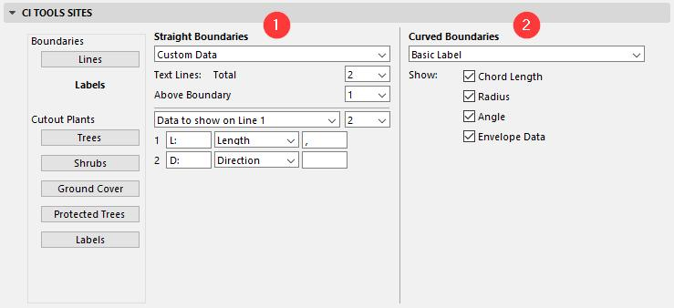
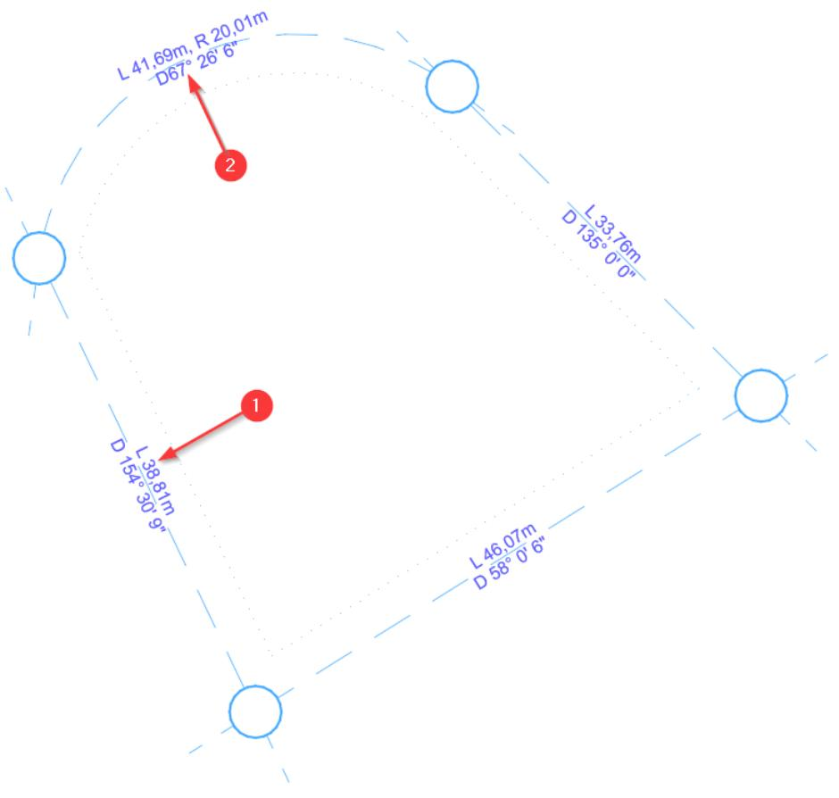
镂空植物
乔木
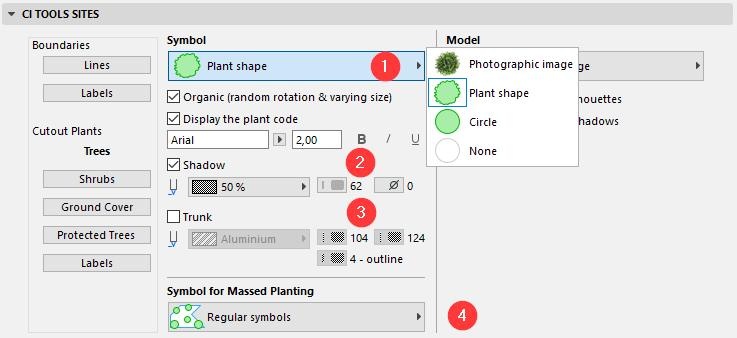
- Plan View Symbol Preference（平面视图符号偏好）—— 可用选项为：
Photographic Image（照片图像）—— 显示植物的俯视照片。注意：目前并非所有植物都有俯视照片，没有俯视照片的对象将显示植物形状
- Plant Shape（植物形状）—— 平面视图中植物的剪影：
- Circle（圆形）：
- None（无）：
- Organic（随机旋转与尺寸变化）—— 按对象设置中指定的百分比偏差施加尺寸变化，并随机旋转，以获得更“自然”的表现
- Shadow Settings（阴影设置）开启或关闭，在平面视图中显示阴影，并设置所用的填充类型和画笔：
Shadow Off（阴影关闭）：
- Shadow On（阴影开启）：

- 树干设置（Trunk Settings）
- 在平面视图中开启/关闭
- 填充选择
- 填充前景画笔
- 填充背景画笔
- 轮廓画笔
- 群植的平面符号（Plan Symbol for Massed Planting）
Square Dots（方形点）：
Regular Symbols（规则符号）：

这允许将散植植物显示为规则符号或方形点。
- 模型（三维视图）—— 选项包括
- Photographic Image（照片图像）
- Plant Shape（植物形状）
- Outline only（仅轮廓）
- Rectangular billboard（矩形剪影式）
- 将镂空显示为剪影（Show Cutouts as Silhouettes）
在三维中增加一个多边形以投射阴影（在三维中垂直于太阳方向放置）
灌木

- Plan View Symbol Preference（平面视图符号偏好）
- Photographic Image（照片图像）
- Plant Shape（植物形状）
- Circle（圆形）
- None（无）
Organic（随机旋转与尺寸变化）
按对象设置中指定的百分比偏差施加尺寸变化，并随机旋转，以获得更“自然”的表现。
- Plant Code（植物编号）可开启或关闭。
- Shadow Settings（阴影设置）
- 在平面视图中开启/关闭
- 填充选择
- 阴影轮廓的线型
- 群植的平面符号

这允许将散植植物显示为规则符号或方形点。
- 模型（三维视图）。选项包括
- Photographic Image（照片图像）
- Plant Shape（植物形状）
- Outline only（仅轮廓）
- Rectangular billboard（矩形剪影式）
- 将镂空显示为剪影
在三维中增加一个多边形以投射阴影（在三维中垂直于太阳方向放置）
地被
- Plan View Symbol Preference（平面视图符号偏好）
- Photographic Image（照片图像）
- Plant Shape（植物形状）
- Circle（圆形）
- None（无）
Organic（随机旋转与尺寸变化）
按对象设置中指定的百分比偏差施加尺寸变化，并随机旋转，以获得更“自然”的表现。
- Plant Code（植物编号）可开启或关闭。
- Shadow Settings（阴影设置）
- 在平面视图中开启/关闭
- 填充选择
- 阴影轮廓的线型
- 群植的平面符号

这允许将散植植物显示为规则符号或方形点。
- 模型（三维视图）。选项包括
- Photographic Image（照片图像）
- Plant Shape（植物形状）
- Outline only（仅轮廓）
- Rectangular billboard（矩形剪影式）
- 将镂空显示为剪影
在三维中增加一个多边形以投射阴影（在三维中垂直于太阳方向放置）
保护树木
如果在设置中将某棵树设为受保护，请参见下图：
有一个模型视图选项可以全局控制这些设置：
- 平面视图设置
- 模型视图设置
标签
- 标签的平面视图字体可控制。
- 标签的内容可调整。
The Sites tool has several Model View Options (MVOs) available so that you can set the appearance for Sites Elements to be different in each view, rather than having to change their settings every time you want them to display differently.
The Sites MVOs are split into two broad Categories:
Boundaries
This covers settings for the Site Boundary elements, and is split into 2 groups:
- Lines
- Labels
Cutout Plants
And this area covers the Cutout Plants elements, and is made up of 5 parts:
- Trees
- Shrubs
- Ground Cover
- Protected Trees
- Labels
Let us explore these individually
Boundaries
Lines
These Lines Relate to the Site Boundaries created with the Sites Tool. The interface is setout as follows:
- Controls if the Yard Setback line should be displayed
- Sets whether the Boundary is labelled
- These settings control the Pen Colour and Linetype of the Boundary Line
- Controls the Pen colour of the Setback line , and the Linetype of it
- Controls the Pen colour of the circles at the end of the boundary lines
- These Settings Relate to the settings for the contents of the Boundary Labels (if turned on in (2))
- And finally these settings control the Formatting of the text for the label
Labels
- This sets the Contents of the Labels for Straight Boundaries . The available options are:
Basic Label - this shows just the Length , Direction , and Envelope Data
- Custom Data - This lets you customise the data to be displayed. Set the Text Lines field to how many lines of text you want, and Above boundary defines the amount of those lines which are above the boundary line (the rest will display below it). Then Select the line you want to edit from the drop-down below that, and how many data elements should be in it. Then in the fields below, set the Prefix, Value, and Suffix for each data element
- or Listed Data - this works similarly to Custom data, but elements are presented in a list which can be dragged to wherever you want it, rather than centred about the Line itself
- This sets the custom data for any Curved Boundaries - the available options are the same as in (1) above)
Cut-out Plants
Trees
- Plan View Symbol Preference - the options available are:
Photographic Image - displays a photo of a top-down view of the plant. Note: currently not all plants have Photographic plan view images, the plant shape will be displayed for any objects which do not have a top-down photo available
- Plant Shape - a silhouette of the plant in plan-view:
- Circle:
- None:
- Organic (random rotation and varying size) -this applies a percentage deviation in size as specified in the object settings and a random rotation to have a more ‘organic’ representation
- Shadow Settings Toggle On or Off displaying a shadow in Plan view, and set the Fill Type and Pen to use for it:
Shadow Off:
- Shadow On:
- Trunk Settings
- Toggle On and Off in plan view
- Fill choice
- Fill Foreground pen
- Fill Background pen
- Outline pen
- Plan Symbol for Massed Planting
Square Dots:
Regular Symbols:
This allows for place planting to be displayed as regular symbols or as Square dots
- Model (3D view) - options include
- Photographic Image
- Plant Shape
- Outline only
- Rectangular billboard
- Show Cutouts as Silhouettes
Extra Polygon in 3D to cast shadows (placed perpendicular to Sun in 3D)
Shrubs
- Plan View Symbol Preference
- Photographic Image
- Plant Shape
- Circle
- None
Organic (random rotation and varying size)
This applies a percentage deviation in size as specified in the object settings and a random rotation to have a more ‘organic’ representation.
- Plant Code can be toggled on or off.
- Shadow Settings
- Toggle On and Off in Plan view
- Fill choice
- Line Type of shadow outline
- Plan Symbol for Massed Planting
This allows for place planting to be displayed ad regular symbols or as Square dots
- Model (3D view). options include
- Photographic Image
- Plant Shape
- Outline only
- Rectangular billboard
- Show Cutouts as Silhouettes
Extra Polygon in 3D to cast shadows (placed perpendicular to Sun in 3D)
Ground Cover
- Plan View Symbol Preference
- Photographic Image
- Plant Shape
- Circle
- None
Organic (random rotation and varying size)
This applies a percentage deviation in size as specified in the object settings and a random rotation to have a more ‘organic’ representation.
- Plant Code can be toggled on or off.
- Shadow Settings
- Toggle On and Off in Plan view
- Fill choice
- Line Type of shadow outline
- Plan Symbol for Massed Planting
This allows for place planting to be displayed ad regular symbols or as Square dots
- Model (3D view). options include
- Photographic Image
- Plant Shape
- Outline only
- Rectangular billboard
- Show Cutouts as Silhouettes
Extra Polygon in 3D to cast shadows (placed perpendicular to Sun in 3D)
Protected Trees
If a tree is set to be protected in the Settings, see image below:
There is a Model View option that controls these settings globally:
- Plan view Settings
- Model View Settings
Labels
- Plan view Font of Labels can be controlled.
- Content of Label can be adjusted.
英文原文对照Official English Original
The Sites tool has several Model View Options (MVOs) available so that you can set the appearance for Sites Elements to be different in each view, rather than having to change their settings every time you want them to display differently.
The Sites MVOs are split into two broad Categories:
Boundaries
This covers settings for the Site Boundary elements, and is split into 2 groups:
- Lines
- Labels
Cutout Plants
And this area covers the Cutout Plants elements, and is made up of 5 parts:
- Trees
- Shrubs
- Ground Cover
- Protected Trees
- Labels
Let us explore these individually
Boundaries
Lines
These Lines Relate to the Site Boundaries created with the Sites Tool. The interface is setout as follows:
- Controls if the Yard Setback line should be displayed
- Sets whether the Boundary is labelled
- These settings control the Pen Colour and Linetype of the Boundary Line
- Controls the Pen colour of the Setback line , and the Linetype of it
- Controls the Pen colour of the circles at the end of the boundary lines
- These Settings Relate to the settings for the contents of the Boundary Labels (if turned on in (2))
- And finally these settings control the Formatting of the text for the label
Labels
- This sets the Contents of the Labels for Straight Boundaries . The available options are:
Basic Label - this shows just the Length , Direction , and Envelope Data
- Custom Data - This lets you customise the data to be displayed. Set the Text Lines field to how many lines of text you want, and Above boundary defines the amount of those lines which are above the boundary line (the rest will display below it). Then Select the line you want to edit from the drop-down below that, and how many data elements should be in it. Then in the fields below, set the Prefix, Value, and Suffix for each data element
- or Listed Data - this works similarly to Custom data, but elements are presented in a list which can be dragged to wherever you want it, rather than centred about the Line itself
- This sets the custom data for any Curved Boundaries - the available options are the same as in (1) above)
Cut-out Plants
Trees
- Plan View Symbol Preference - the options available are:
Photographic Image - displays a photo of a top-down view of the plant. Note: currently not all plants have Photographic plan view images, the plant shape will be displayed for any objects which do not have a top-down photo available
- Plant Shape - a silhouette of the plant in plan-view:
- Circle:
- None:
- Organic (random rotation and varying size) -this applies a percentage deviation in size as specified in the object settings and a random rotation to have a more ‘organic’ representation
- Shadow Settings Toggle On or Off displaying a shadow in Plan view, and set the Fill Type and Pen to use for it:
Shadow Off:
- Shadow On:
- Trunk Settings
- Toggle On and Off in plan view
- Fill choice
- Fill Foreground pen
- Fill Background pen
- Outline pen
- Plan Symbol for Massed Planting
Square Dots:
Regular Symbols:
This allows for place planting to be displayed as regular symbols or as Square dots
- Model (3D view) - options include
- Photographic Image
- Plant Shape
- Outline only
- Rectangular billboard
- Show Cutouts as Silhouettes
Extra Polygon in 3D to cast shadows (placed perpendicular to Sun in 3D)
Shrubs
- Plan View Symbol Preference
- Photographic Image
- Plant Shape
- Circle
- None
Organic (random rotation and varying size)
This applies a percentage deviation in size as specified in the object settings and a random rotation to have a more ‘organic’ representation.
- Plant Code can be toggled on or off.
- Shadow Settings
- Toggle On and Off in Plan view
- Fill choice
- Line Type of shadow outline
- Plan Symbol for Massed Planting
This allows for place planting to be displayed ad regular symbols or as Square dots
- Model (3D view). options include
- Photographic Image
- Plant Shape
- Outline only
- Rectangular billboard
- Show Cutouts as Silhouettes
Extra Polygon in 3D to cast shadows (placed perpendicular to Sun in 3D)
Ground Cover
- Plan View Symbol Preference
- Photographic Image
- Plant Shape
- Circle
- None
Organic (random rotation and varying size)
This applies a percentage deviation in size as specified in the object settings and a random rotation to have a more ‘organic’ representation.
- Plant Code can be toggled on or off.
- Shadow Settings
- Toggle On and Off in Plan view
- Fill choice
- Line Type of shadow outline
- Plan Symbol for Massed Planting
This allows for place planting to be displayed ad regular symbols or as Square dots
- Model (3D view). options include
- Photographic Image
- Plant Shape
- Outline only
- Rectangular billboard
- Show Cutouts as Silhouettes
Extra Polygon in 3D to cast shadows (placed perpendicular to Sun in 3D)
Protected Trees
If a tree is set to be protected in the Settings, see image below:
There is a Model View option that controls these settings globally:
- Plan view Settings
- Model View Settings
Labels
- Plan view Font of Labels can be controlled.
- Content of Label can be adjusted.
步骤 1 - 指北针
Step 1 - North Point
我们在 Sea Level/Datum（海平面/基准面）楼层上建立场地信息，以便在项目中提供相对于此的准确标高与尺寸。
在创建任何边界信息之前，我们需要先向项目中添加指北针（North Pointer）。
- 定位到 Sea Level/Datum，使用 Quick Options Bar（快速选项栏）将 Layer Combination（图层组合）设为 All（全部）并设置比例。
现在我们就可以放置指北针了。
- 选择 Cadimage > Sites > Place North Arrow（放置指北针）
- 选择你喜欢的样式，并将符号尺寸调整为 2500
- 在 Floor Plan and Section（平面图与剖面图）设置中，将 show on Stories（显示于楼层）设为 All Stories（所有楼层）
- 将图层设为 Doc: Site
**
**
- 将 North Arrow（指北针）放置在建筑的右上角。
We model our Site information on the Sea Level/Datum Storey so we can provide accurate Levels and Dimensions relative to this in our project.
Before creating any Boundary information, we need to add a North Pointer to our Project.
- Navigate to the Sea Level/Datum,use the Quick Options Bar to set the Layer Combination to All and the scale
Now we can place our North Arrow
- Choose Cadimage > Sites > Place North Arrow
- Choose a style you prefer and adjust the size of the symbol to 2500
- In theFloor Plan and Sectionsettings set show on Stories to All Stories
- Set the Layer to Doc: Site
**
**
- Place the North Arrow in the Top Right of the building.
英文原文对照Official English Original
We model our Site information on the Sea Level/Datum Storey so we can provide accurate Levels and Dimensions relative to this in our project.
Before creating any Boundary information, we need to add a North Pointer to our Project.
- Navigate to the Sea Level/Datum,use the Quick Options Bar to set the Layer Combination to All and the scale
Now we can place our North Arrow
- Choose Cadimage > Sites > Place North Arrow
- Choose a style you prefer and adjust the size of the symbol to 2500
- In theFloor Plan and Sectionsettings set show on Stories to All Stories
- Set the Layer to Doc: Site
**
**
- Place the North Arrow in the Top Right of the building.
将随机选择的植物替换为其他植物
Swapping out Random selections of Plants to others
Ci Sites 工具能够从所选对象中随机取消选择，从而让你轻松地把成组植物中的部分替换为不同的植物。
该功能适用于以任何方式放置的植物或其他任何对象 —— 即使用 Ci Tools Sites 的 Place along Line（沿线放置）或 Fill（填充放置）命令放置、手动放置、通过分布放置，或任何其他方法。
要执行此操作，请先选择所有要处理的植物。
接下来，点击 Ci Tools 菜单 - Sites - Randomly Deselect Plants（随机取消选择植物）
将弹出一个对话框，你可以在其中选择要随机取消选择的对象数量。
在此输入你希望使用的百分比，然后点击 OK。
这将按比例取消选择相应数量的植物，现在你可以打开剩余植物的对象设置，并替换为不同的对象。
如果你想要更多的随机性或更多的植物，可以继续重复此操作。即再次选中所有植物并运行同样的流程，然后把新的随机集合再次替换为不同的植物。
在此过程中不会向对象添加任何内容，因此你不必担心模型因使用的种类数量而变慢 —— 你可以随意地反复随机取消选择并替换对象。
The Ci Sites tool has the ability to Randomly deselect items from a Selection so that you can easily switch portions of groups of Plants to different Plants
This function will work on Plants, or any other objects, that are placed by any means - i.e. using the Ci Tools Sites Place along Line or Fill commands, placed manually, via distribution, or any other method
To do this, start by Selecting all the plants that you want to work with
Next, click on the Ci Tools menu - Sites - Randomly Deselect Plants
This will open a dialog where you can select the amount of elements to be randomly deselected
Enter the percentage that you want to use here, and then hit OK
This will deselect that proportion of Plants, and you can now open the object settings on the remaining plants, and swap to a different object
If you want more randomisation, or additional plants, you can keep on doing this. I.e. select all of the plants again and run the same process again, and swap the new random set to a different plant again.
Nothing is being added to the objects in this process, so you don't need to worry about the model slowing down due to the amount of variety used or anything like that - you can keep randomly deselecting and swapping out objects as much as you like
英文原文对照Official English Original
The Ci Sites tool has the ability to Randomly deselect items from a Selection so that you can easily switch portions of groups of Plants to different Plants
This function will work on Plants, or any other objects, that are placed by any means - i.e. using the Ci Tools Sites Place along Line or Fill commands, placed manually, via distribution, or any other method
To do this, start by Selecting all the plants that you want to work with
Next, click on the Ci Tools menu - Sites - Randomly Deselect Plants
This will open a dialog where you can select the amount of elements to be randomly deselected
Enter the percentage that you want to use here, and then hit OK
This will deselect that proportion of Plants, and you can now open the object settings on the remaining plants, and swap to a different object
If you want more randomisation, or additional plants, you can keep on doing this. I.e. select all of the plants again and run the same process again, and swap the new random set to a different plant again.
Nothing is being added to the objects in this process, so you don't need to worry about the model slowing down due to the amount of variety used or anything like that - you can keep randomly deselecting and swapping out objects as much as you like
使用“镂空”（Cutout）树木对象
Using the "Cutout" tree objects
Ci Sites 4.26 升级带来了我们三维“镂空”（Cutout）风格树木对象的全面改版。
这些对象都可以在 Sites 文件夹下的 Plants Cutout 文件夹中找到。
这些植物共用同一套用户界面，因此一旦你了解其中一个的使用方式，就等于了解了全部！
配置（Configuration）
- 植物尺寸 —— A 为宽度/冠幅，B 为高度
- 尺寸偏差，以百分比表示。所放置的任何植物，其显示尺寸都会在上述输入尺寸的上下偏差范围内。
例如，若你的尺寸为 1000x1000，偏差输入 10%，则使用这些设置放置的所有植物将显示在 900mm 至 1100mm 之间
- 若希望植物尺寸始终精确等于你指定的值，只需将偏差设为零
- （仅乔木可用）树干直径设置 —— C 为胸径处的直径，D 为根颈处的直径
- （仅乔木可用）保护设置 —— 指定该树是否受保护，若受保护则指定树木保护半径和结构根系半径
- 对象的模型显示设置 —— 为 1 个镂空选择 Silhouette（剪影），或改为任意多个；未应用纹理时，模型颜色用于三维/立面显示。使用更多镂空可能让植物显得更“三维”，但也可能“过头”，因此我们建议对该设置进行尝试，找到能实现你想要效果的数值。
- 对象的平面视图显示设置 —— Show as Massed Planting（显示为群植）选项控制该植物是否被视为群植。群植的显示由模型视图选项控制。其余设置控制二维显示的画笔、填充和线型。
植物数据（Plant Data）
本部分包含关于该植物的所有附加数据，均可作为参数获取，因此你可以按需对其进行统计或标注。
它们默认采用每个镂空所代表植物的设置，但如有需要，你可以在此手动覆盖任何数据。
The Ci Sites 4.26 upgrade brings with it an overhaul of our 3D 'Cutout' style tree objects
These objects can all be found in our Plants Cutout folder, inside the Sites folder
The plants share a user interface, so once you know how one of them works, you know how all of them work!
Configuration
- Size of the plant - A for the Width/Spread, and B for Height
- Size variance, as a percentage. Any plant placed will be displayed at a size within the variance entered above or below the Size entered.
e.g. if your size is 1000x1000, and you enter a variance of 10%, all plants placed using these settings will display between 900mm and 1100mm
- if you want your plants to only ever be exactly the size you tell them, just set the variance to Zero
- (only available on Trees)Trunk Diameter settings - C for diameter at breast height, and D at the root crown
- (only available on Trees) Protection settings - specify if the Tree is protected, and if so, what the Tree Protection and Structural Root radii are
- Settings for the model display of the object - Choose Silhouette for 1 cutout, or change to as many as you want there, and the model colour is used in 3d/Elevation when Texture is not applied. Using More cutouts may make the plant look more "3D", but can also become "too much", so we recommend experimenting with this setting and finding a value that gives you the look you want.
- Settings for the Plan View display of the object - The Show as Massed Planting option controls if this should be considered to be massed planting or not. The display of Massed plants is controlled in Model View Options. The other settings control the pen, fill, and linetype settings for the 2D display
Plant Data
This section includes all the additional Data about the plant, all of which are available as Parameters, so you can Schedule them or Label them as you require.
They will default to the settings of the plant are representing with each cutout, but you can manually override any of the data here if you need to
英文原文对照Official English Original
The Ci Sites 4.26 upgrade brings with it an overhaul of our 3D 'Cutout' style tree objects
These objects can all be found in our Plants Cutout folder, inside the Sites folder
The plants share a user interface, so once you know how one of them works, you know how all of them work!
Configuration
- Size of the plant - A for the Width/Spread, and B for Height
- Size variance, as a percentage. Any plant placed will be displayed at a size within the variance entered above or below the Size entered.
e.g. if your size is 1000x1000, and you enter a variance of 10%, all plants placed using these settings will display between 900mm and 1100mm
- if you want your plants to only ever be exactly the size you tell them, just set the variance to Zero
- (only available on Trees)Trunk Diameter settings - C for diameter at breast height, and D at the root crown
- (only available on Trees) Protection settings - specify if the Tree is protected, and if so, what the Tree Protection and Structural Root radii are
- Settings for the model display of the object - Choose Silhouette for 1 cutout, or change to as many as you want there, and the model colour is used in 3d/Elevation when Texture is not applied. Using More cutouts may make the plant look more "3D", but can also become "too much", so we recommend experimenting with this setting and finding a value that gives you the look you want.
- Settings for the Plan View display of the object - The Show as Massed Planting option controls if this should be considered to be massed planting or not. The display of Massed plants is controlled in Model View Options. The other settings control the pen, fill, and linetype settings for the 2D display
Plant Data
This section includes all the additional Data about the plant, all of which are available as Parameters, so you can Schedule them or Label them as you require.
They will default to the settings of the plant are representing with each cutout, but you can manually override any of the data here if you need to
观看：3 分钟快速上手！
Watch: Get started in 3 minutes!
在这段短视频中，Ralph 演示如何开始使用 Sites 工具。
In this short video, Ralph shows you how to get started with the Site Tool.
英文原文对照Official English Original
In this short video, Ralph shows you how to get started with the Site Tool.